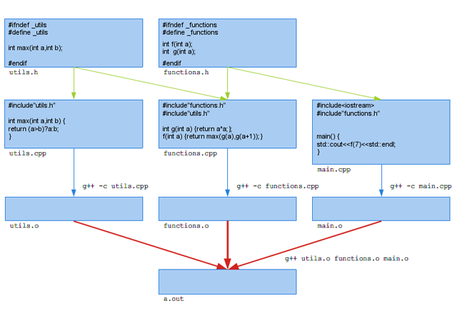
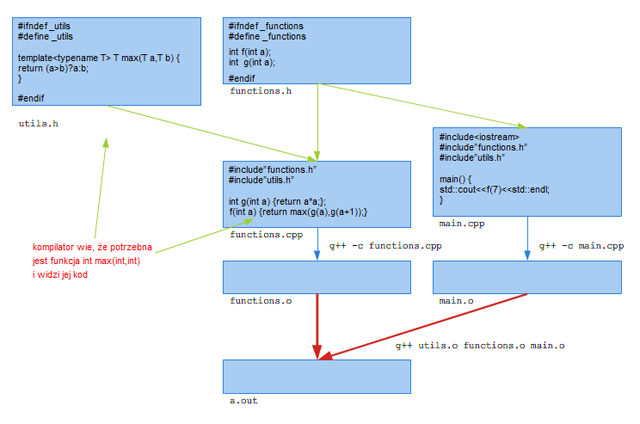
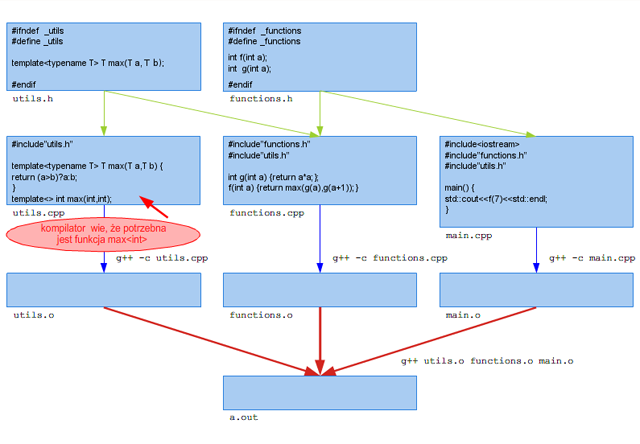
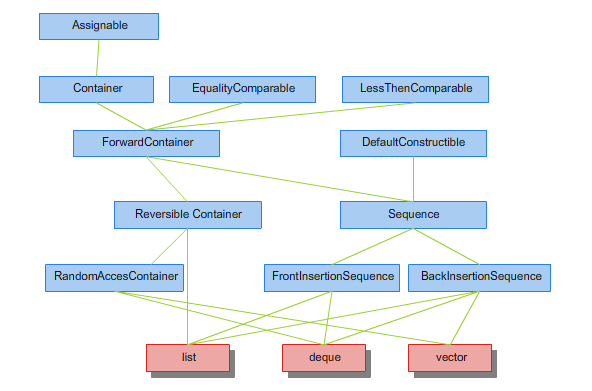
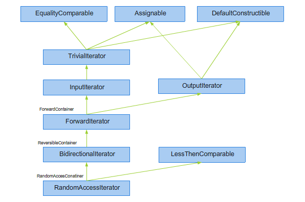
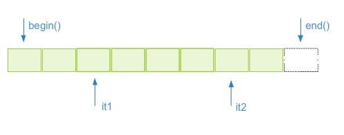
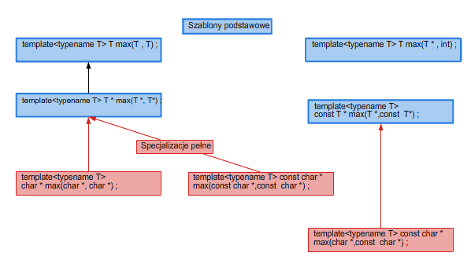
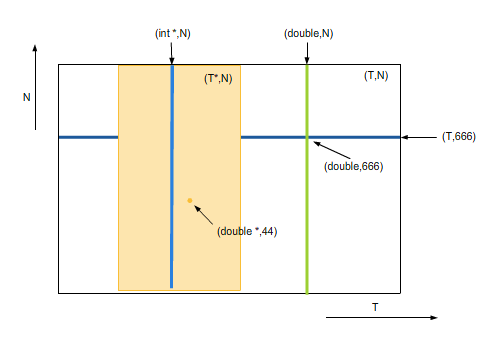
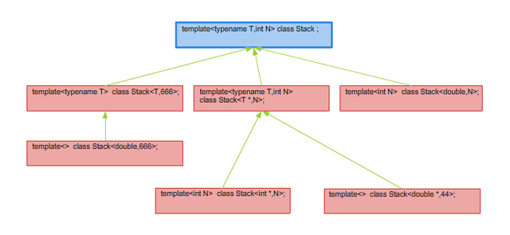
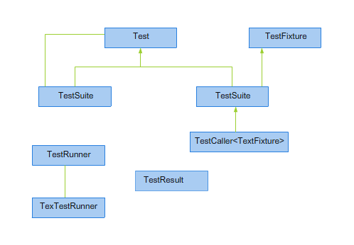

Wykład (30 godzin) + laboratorium (30 godzin)
Celem przedmiotu jest zapoznanie studentów z zaawansowanymi technikami programowania obiektowego w C++.
Autorzy
W praktyce programowania często spotykamy się z funkcjami (algorytmami), które można zastosować do szerokiej klasy typów i struktur danych. Typowym przykładem jest funkcja obliczająca maksimum dwu wartości. Ten trywialny, aczkolwiek przydatny kod można zapisać np. w postaci:
int max(int a,int b) { return (a>b)?a:b; };
Przykład 1.1
Funkcja max wybiera większy z dwu int-ów, ale widać, że kod będzie identyczny dla argumentów dowolnego innego typu pod warunkiem, iż istnieje dla niego operator porównania i konstruktor kopiujący. W językach programowania z silną kontrolą typów, takich jak C, C++ czy Java definiując funkcję musimy jednak podać typy przekazywanych parametrów oraz typ wartości zwracanej. Oznacza to, że dla każdego typu argumentów musimy definiować nową funkcję max:
int max(int a, int b) {return (a>b)?a:b;}; double max(double a,double b) {return (a>b)?a:b;}; string max(string a,string b) {return (a>b)?a:b;}; <i>skorzystaliśmy tu z dostępnej w C++ możliwości przeładowywania funkcji</i><br /> main() { cout<< max(7,5) <<end; cout<< max(3.1415,2.71) <<endl; cout<< max("Ania","Basia") <<endl; }
Przykład 1.2
Takie powtarzanie kodu, poza oczywistym zwiększeniem nakładu pracy, ma inne niepożądane efekty, związane z trudnością zapewnienia synchronizacji kodu każdej z funkcji. Jeśli np. zauważymy błąd w kodzie, to musimy go poprawić w kilku miejscach. To samo dotyczy optymalizacji kodu. W powyższym przykładzie kod jest wyjątkowo prosty, ale taki sam problem dotyczy np. funkcji sortujących. Rozważmy prosty algorytm sortowania bąbelkowego:
inline void swap(double &a,double &b) { double tmp=a;a=b;b=tmp; } void buble_sort(double *data,int N) { for(int i=n-1;i>0;--i) for(int j=0; j < i;++j) if(data[j]>data[j+1]) swap(data[j],data[j+1]); }
Powyższa funkcja sortuje tablicę zawierającą wartości typu double, ale widać, że znów kod będzie identyczny, jeśli zamiast double użyjemy dowolnego innego typu, którego wartości możemy porównywać za pomocą funkcji operator>() i dla którego zdefiniowany jest operator przypisania. Co więcej, kod nie zmieni się jeśli zamiast tablicy użyjemy dowolnej innej struktury danych, umożliwiającej indeksowany dostęp do swoich składowych, np. std::vector ze Standardowej Biblioteki Szablonów STL. W tym przypadku kod jest już bardziej skomplikowany i kłopoty związane z jego powielaniem będą większe. Przykłady takie można mnożyć, istnieje bowiem wiele takich funkcji czy algorytmów uogólnionych. Ich kod może być znacznie bardziej skomplikowany niż w podanych przykładach, a zależność od typu argumentów nie musi ograniczać się do sygnatury, ale występować również we wnętrzu funkcji, jak np. w przypadku zmiennej tmp w funkcji swap. Powielanie takiego kodu dla różnych typów parametrów może łatwo prowadzić do błędów, utrudnia ich wykrywanie, a konieczność edycji każdego egzemplarza kodu zniechęca do wprowadzania ulepszeń.
Jak radzili, a właściwie jak radzą sobie programiści bez możliwości skorzystania z szablonów? Tradycyjne sposoby rozwiązywania tego typu problemów to między innymi makra:
#define max(a,b) ( (a>b)?a:b) )lub używanie wskaźników typów ogólnych, takich jak void *, jak np. w funkcji qsort ze standardowej biblioteki C:
void qsort (void *base, size_t nmemb, size_t size, int(*compar)(const void *, const void *));
Mimo iż użyteczne, żadne z tych rozwiązań nie może zostać uznane za wystarczająco ogólne i bezpieczne.
Można się również pokusić o próbę rozwiązania tego problemu za pomocą mechanizmów programowania obiektowego. W sumie jest to bardziej wyrafinowana odmiana rzutowania na void *. Polega na zdefiniowaniu ogólnego typu dla obiektów, które mogą być porównywane:
class GreaterThanComparable { public: virtual bool operator>(const GreaterThanComparable &) const = 0; };
następnie zdefiniowaniu funkcji max w postaci:
const GreaterThanComparable & max(const GreaterThanComparable &a, const GreaterThanComparable &b) { return (a>b)? a:b; }
( Źródło: max_oop.cpp)
i używaniu jej np. w następujący sposób:
class Int:public GreaterThanComparable { int val; public: Int(int i <nowiki>=</nowiki> 0):val(i) {}; operator int() {return val;}; virtual bool operator>(const GreaterThanComparable &b) const { return val > static_cast<const Int&>(b).val; } }; main() { Int a(1),b(2); Int c; c = (const Int &)::max(a,b); cout<<(int)c<<endl; }
( Źródło: max_oop.cpp)
Widać więc wyraźnie, że to podejście wymaga sporego nakładu pracy, a więc w szczególności w przypadku tak prostej funkcji jak max jest wysoce niepraktyczne. Ogólnie rzecz biorąc ma ono następujące wady:
Widać, że podejście obiektowe nie nadaje się najlepiej do rozwiązywania tego szczególnego problemu powielania kodu. Dlatego w C++ wprowadzono nowy mechanizm: szablony. Szablony zezwalają na definiowanie całych rodzin funkcji, które następnie mogą być używane dla różnych typów argumentów.
Definicja szablonu funkcji max, odpowiadającej definicji 1.1 wygląda następująco:
template<typename T> T max(T a,T b) {return (a>b)?a:b;};
( Źródło: max_template.cpp)
Przyjrzyjmy się jej z bliska. Wyrażenie template
int i,j,k; k=max<int>(i,j);
Takie użycie szablonu spowoduje wygenerowanie identycznej funkcji jak 1.1. W powyższym przypadku za T podstawiamy int. Oczywiście możemy podstawić za T dowolny typ i używając szablonów program 1.2 można zapisać następująco:
template<typename T> T max(T a,T b) {return (a>b)?a:b;} main() { cout<<::max<int>(7,5)<<endl; cout<<::max<double>(3.1415,2.71)<<endl; cout<<::max<string>("Ania","Basia")<<endl; }
( Źródło: max_template.cpp)
W powyższym kodzie użyliśmy konstrukcji ::max(a,b). Dwa dwukropki oznaczają, że używamy funkcji max zdefiniowanej w ogólnej przestrzeni nazw. Jest to konieczne aby kod się skompilował, ponieważ szablon max istnieje już w standardowej przestrzeni nazw std. W dalszej części wykładu będziemy te podwójne dwukropki pomijać.
Oczywiście istnieją typy których podstawienie spowoduje błędy kompilacji, np.
complex<double> c1,c2; max<complex<double> >(c1,c2); //brak operatora >
( Źródło: max_template.cpp)
lub
class X { private: X(const X &){}; }; X a,b; max<X>(a,b); //prywatny (niewidoczny) konstruktor kopiujący
( Źródło: max_template.cpp)
Ogólnie rzecz biorąc, każdy szablon definiuje pewną klasę typów, które mogą zostać podstawione jako jego argumenty.
Użyteczność szablonów funkcji zwiększa istotnie fakt, że argumenty szablonu nie muszą być podawane jawnie. Kompilator może je wydedukować z argumentów funkcji. Tak więc zamiast
int i,j,k; k=max<int>(i,j);
możemy napisać
int i,j,k; k=max(i,j);
i kompilator zauważy, że tylko podstawienie int-a za T umożliwi dopasowanie sygnatury funkcji do parametrów jej wywołania i automatycznie dokona odpowiedniej konkretyzacji.
Może się zdarzyć, że podamy takie argumenty funkcji, że dopasowanie argumentów wzorca będzie niemożliwe, otrzymamy wtedy błąd kompilacji. Trzeba pamiętać, że mechanizm automatycznego dopasowywania argumentów szablonu powoduje wyłączenie automatycznej konwersji argumentów funkcji. Podanie jawnie argumentów szablonu (w nawiasach ostrych za nazwą szablonu) jednoznacznie określa sygnaturę funkcji, a więc umożliwia automatyczną konwersję typów. Ilustruje to poniższy kod:
template<typename T> T max(T a,T b) {return (a>b)?a:b;} main() { cout<<::max(3.14,2)<<endl; // błąd: kompilator nie jest w stanie wydedukowac argumentu szablonu, bo typy // argumentów (double,int) nie pasują do (T,T) cout<<::max<int>(3.14,2)<<endl; // podając argument jawnie wymuszamy sygnaturę int max(int,int), a co za tym // idzie automatyczną konwersję argumentu 1 do int-a cout<<::max<double>(3.14,2)<<endl; // podając argument szablonu jawnie wymuszamy sygnaturę // double max(double,double) // a co za tym idzie automatyczną konwersję argumentu 2 do double-a int i; cout<<::max<int *>(&i,i)<<endl; //błąd: nie istnieje konwersja z typu int na int*
( Źródło: max_template.cpp)
Może warto zauważyć, że automatyczna dedukcja parametrów szablonu jest możliwa tylko wtedy, jeśli parametry wywołania funkcji w jakiś sposób zależą od parametrów szablonu. Jeśli tej zależności nie ma, z przyczyn oczywistych dedukcja nie jest możliwa i trzeba parametry podawać jawnie. Wtedy istotna jest kolejność parametrów na liście. Jeżeli parametry, których nie da się wydedukować, umieścimy jako pierwsze, wystarczy, że tylko je podamy jawnie, a kompilator wydedukuje resztę. Ilustruje to poniższy kod:
template<typename T,typename U> T convert(U u) { return (T)u; }; template<typename U,typename T> T inv_convert(U u) { return (T)u; }; fukcje różnią się tylko kolejnością parametrów szablonu main() { cout<<convert(33)<<endl; błąd: kompilator nie jest w stanie wydedukować pierwszego parametru szablonu, bo nie zależy on od parametru wywołania funkcji cout<<convert<char>(33)<<endl; w porządku: podajemy jawnie argument T, kompilator sam dedukuje argument U z typu argumentu wywołania funkcji cout<<inv_convert<char>('a')<<endl; błąd: podajemy jawnie argument odpowiadający parametrowi U. Kompilator nie jest w stanie wydedukować argumentu T, bo nie zależy on od argumentu wywołania funkcji cout<<inv_convert<int,char>(33)<<endl; w porządku: podajemy jawnie oba argumenty szablonu }
( Źródło: convert.cpp)
Z użyciem szablonów wiąże się parę zagadnień niewidocznych w prostych przykładach. W językach C i C++ zwykle rozdzielamy deklarację funkcji od jej definicji i zwyczajowo umieszczamy deklarację w plikach nagłówkowych *.h, a definicję w plikach źródłowych *.c, *.cpp itp. Pliki nagłówkowe są w czasie kompilacji włączane do plików, w których chcemy korzystać z danej funkcji, a pliki źródłowe są pojedynczo kompilowane do plików “obiektowych” *.o. Następnie pliki obiektowe są łączone w jeden plik wynikowy (zob. rysunek 1.1). W pliku korzystającym z danej funkcji nie musimy więc znać jej definicji, a tylko deklarację. Na podstawie nazwy funkcji konsolidator powiąże wywołanie funkcji z jej implementacją znajdującą się w innym pliku obiektowym. W ten sposób tylko zmiana deklaracji funkcji wymaga rekompilacji plików, w których z niej korzystamy, a zmiana definicji wymaga jedynie rekompilacji pliku, w którym dana funkcja jest zdefiniowana.
Rysunek 1.1. Przykład organizacji kodu C++ w przypadku użycia zwykłych funkcji.Taka organizacja umożliwia przestrzeganie "reguły jednej definicji" (one definition rule), wymaganej przez C++. Osobom nieobeznanym z programowaniem w C/C++ zwracam uwagę na konstrukcję
#ifndef _nazwa_pliku_ #define _nazwa_pliku_ ... #endif
uniemożliwiajacą podwójne włączenie tego pliku do jednej jednostki translacyjnej.
Podobne podejście do kompilacje szablonów się nie powiedzie (zob. rysunek 1.2).
Powodem jest fakt, że w trakcie kompilacji pliku utils.cpp
kompilator nie wie jeszcze, że potrzebna będzie funkcja max
Istnieją różne rozwiązania tego problemu. Najprościej chyba jest zauważyć, że opisane zachowanie jest analogiczne do zachowania podczas kompilacji funkcji rozwijanych w miejscu wywołania (inline), których definicja również musi być dostępna w czasie kompilacji. Podobnie więc jak w tym przypadku możemy zamieścić wszystkie deklaracje i definicje szablonów w pliknu nagłówkowym, włączanym do plików, w ktorych z tych szablonów korzystamy (zob. rysunek 1.3). Podobnie jak w przypadku funkcji inline reguła jednej definicji zezwala na powtarzanie definicji/deklaracji szablonów w różnych jednostkach translacyjnych, pod warunkiem, że są one identyczne. Stąd konieczność umieszczania ich w plikach nagłówkowych.
Rysunek 1.3. Przykład organizacji kodu z szablonami, wykorzystującego strategię włączania.Ten sposób organizacji pracy z szablonami, nazywany modelem włączenia, jest najbardziej uniwersalny. Jego główną wadą jestkonieczność rekompilacji całego kodu korzystającego z szablonów przy każdej zmianie definicji szablonu. Również jeśli zmienimy coś w pliku, w którym korzystamy z szablonu, to musimy rekompilować cały kod szablonu włączony do tego pliku, nawet jeśli nie uległ on zmianie. Jeśli się uwzględni fakt, że kompilacja szablonu jest bardziej skomplikowana od kompilacji "zwykłego" kodu, to duży projekt intensywnie korzystający z szablonów może wymagać bardzo długich czasów kompilacji.
Możemy też w jakiś sposób dać znać kompilatorowi, że podczas kompilacji
pliku utils.cpp powinien wygenerować kod dla funkcji
max
template<typename T> T max(T a,T b) {return (a>b)?a:b;} template int max<int>(int ,int); <i>konkretyzacja jawna</i>
Używając konkretyzacji jawnej musimy pamiętać o dokonaniu konkretyzacji każdej używanej funkcji, tak że to podejście nie skaluje się zbyt dobrze. Ponadto w przypadku szablonów klas (omawianych w następnym module) konkretyzacja jawna pociąga za sobą konkretyzację wszystkich metod danej klasy, a konkretyzacja “na żądanie” - jedynie tych używanych w programie.
Rysunek 1.4. Przykład organizacji kodu z szablonami, wykorzystującego jawną konkretyzację.Poza parametrami określającymi typ, takimi jak parametr T w dotychczasowych przykładach, szablony funkcji mogą przyjmować również parametry innego rodzaju. Obecnie mogą to być inne szablony, co omówię w następnym podrozdziale lub parametry określające nie typ, ale wartości. Jak na razie (w obecnym standardzie) te wartości nie mogą być dowolne, ale muszą mieć jeden z poniższych typów:
Takie parametry określające wartość nazywamy parametrami pozatypowymi. W praktyce z parametrów pozatypowych najczęściej używa się parametrów typu całkowitoliczbowego. Np.
template<size_t N,typename T> T dot_product(T *a,T *b) { T total=0.0; for(size_t i=0;i<N;++i) total += a[i]*b[i] ; return total; };
( Źródło: dot_product.cpp)
Po raz drugi zwracam uwagę na kolejność parametrów szablonu na liście parametrów. Dzięki temu, że niededukowalny parametr N jest na pierwszym miejscu wystarczy podać jawnie tylko jego, drugi parametr typu T zostanie sam automatycznie wydedukowany na podstawie przekazanych argumentów wywołania funkcji:
main() { double x[3],y[3]; dot_product<3>(x,y); }
( Źródło: dot_product.cpp)
Parametry pozatypowe są zresztą "ciężko dedukowalne". Właściwie jedynym sposobem na przekazania wartości stałej poprzez typ argumentu wywołania jest skorzystanie z parametrów będących szablonami klas (zob. następny podrozdział).
Używając pozatypowych parametrów szablonów musimy pamiętać, że odpowiadające im argumenty muszą być stałymi wyrażeniami czasu kompilacji. Stąd jeżeli używamy typów wskaźnikowych, muszą to być wskaźniki do obiektów łączonych zewnętrznie, a nie lokalnych. Ponieważ jednak jeszcze ani razu nie używałem pozatypowych parametrów szablonów innych niż typy całkowite, to nie będę podawał żadnych przykładów takich paremtrów na tym wykładzie.
Jak już wspomniałem w poprzednim podrozdziale, parametrami szablonu funkcji mogą być również szablony klas (zob. następny podrozdział). Szablony parametrów szablonu umożliwiają przekazanie nazwy szablonu jako argumentu szablonu funkcji. Więcej o nich napiszę w drugiej części wykładu. Tutaj tylko pokażę jako ciekawostkę w jaki sposób można dedukować wartości pozatypowych argumentów szablonu.
template< template<int N> class C,int K> <i>taka definicja oznacza, że parametr C określa szablon klasy posiadający jeden parametr typu <tt>int</tt>. Parametr N służy tylko do definicji szablonu C i nie może być użyty nigdzie indziej</i> void f(C<K>){ cout<<K<<endl; };<br /> template<int N> struct SomeClass {};<br /> main() { SomeClass<1> c1; SomeClass<2> c2;<br /> f(c1); <i>C=SomeClass K=1</i> f(c2); <i>C=SomeClass K=2</i> }
( Źródło: deduce_N.cpp)
Jak na razie definiowaliśmy szablony zwykłych funkcji. C++ umożliwia również definiowanie szablonów metod klasy np.:
struct Max { template<typename T> T max(T a,T b) {return (a>b)?a:b;} }; main() { Max m; m.max(1,2); }
( Źródło: max_method.cpp)
Szablonów metod składowych dotyczą takie same reguły jak szablonów funkcji.
Uwagi na początku poprzedniego rozdziału odnoszą się w tej samej mierze do klas, jak i do funkcji. I tutaj mamy do czynienia z kodem, który w niezmienionej postaci musimy powielać dla różnych typów. Sztandarowym przykładem takiego kodu są różnego rodzaju kontenery (pojemniki), czyli obiekty służące do przechowywania innych obiektów. Jest oczywiste, że kod kontenera jest w dużej mierze niezależny od typu obiektów w nim przechowywanych. Jako przykład weźmy sobie stos liczb całkowitych. Możliwa definicja klasy stos może wyglądać następująco, choć nie polecam jej jako wzoru do naśladowania w prawdziwych aplikacjach:
class Stack { private: int rep[N]; size_t top; public: static const size_t N=100; Stack():_top(0) {}; void push(int val) {_rep[_top++]=val;} int pop() {return rep[--top];} bool is_empty {return (top==0);} }
Ewidentnie ten kod będzie identyczny dla stosu obiektów dowolnego innego typu, pod warunkiem, że typ ten posiada zdefiniowany operator=() i konstruktor kopiujący.
W celu zaimplementowania kontenerów bez pomocy szablonów możemy probować podobnych sztuczek jak te opisane w poprzednim rozdziale. W językach takich jak Java czy Smalltalk, które posiadają uniwersalną klasę Object, z której są dziedziczone wszystkie inne klasy, a nie posiadają (Java już posiada) szablonów, uniwersalne kontenery są implementowane właśnie poprzez rzutowanie na ten ogólny typ. W przypadku C++ nawet to rozwiązanie nie jest praktyczne, bo C++ nie posiada pojedynczej hierarchii klas.
Rozwiązaniem są znów szablony, tym razem szablony klas. Podobnie jak w przypadku szablonów funkcji, szablon klasy definiuje nam w rzeczywistości całą rodzinę klas. Szablon klasy Stack możemy zapisać następująco:
template<typename T> class Stack { public: static const size_t N=100; private: T _rep[N]; size_t _top;<br> public: Stack():_top(0) {}; void push(T val) {_rep[_top++]=val;} T pop() {return _rep[--_top];} bool is_empty {return (_top==0);} };
( Źródło: stack.cpp)
Tak zdefiniowanego szablonu możemy używać podając jawnie jego argumenty.
Stack<string> st ; st.push("ania"); st.push("asia"); st.push("basia"); while(!st.is_empty() ){ cout<<st.pop()<<endl; }
( Źródło: stack.cpp)
Dla szablonów klas nie ma możliwości automatycznej dedukcji argumentów szablonu, ponieważ klasy nie posiadają argumentów wywołania, które mogłyby do tej dedukcji posłużyć. Jest natomiast możliwość podania argumentów domyślnych, np.
template<typename T = int> Stack { ... }
( Źródło: stack.cpp)
Wtedy możemy korzystać ze stosu bez podawania argumentów szablonu i wyrażenie
Stack s;
będzie równoważne wyrażeniu:
Stack<int> s;
Dla domyślnych argmentów szablonów klas obowiązują te same reguły, co dla domyślnych argumentów wywołania funkcji.
Należy pamiętać, że każda konkretyzacja szablonu klasy dla różniących się zestawów argumentów jest osobną klasą:
Stack<int> si;
Stack<double> sd;
sd=si; //błąd: to są obiekty różnych klas a nie zdefiniowano przypisania( Źródło: stack.cpp)
Okazuje się, że próba zdefiniowania operatora przypisania, który np. przypisywałby do siebie stosy różnych typów, nie jest łatwa, ponieważ dwa takie stosy nie widzą swoich reprezentacji.
Zestaw możliwych parametrów szablonów klas jest taki sam jak dla szablonów funkcji. Podobnie najczęściej wykorzystywane są wyrażenia całkowitoliczbowe. W naszym przykładzie ze stosem możemy ich użyć do przekazania rozmiaru stosu:
template<typename T = int , size_t N = 100> class Stack { private: T rep[N]; size_t top; public: Stack():_top(0) {};<br /> void push(T val) {_rep[_top++]=val;} T pop() {return rep[--top];} bool is_empty {return (top==0);} }
( Źródło: stack_N.cpp)
Podkreślam jeszcze raz, że Stack
Stos jest nie tyle strukturą danych, ile sposobem dostępu do nich. Stos realizuje regułę LIFO czyli Last In First Out. W tym sensie nie jest istotne w jaki sposób dane są na stosie przechowywane. Może to być tablica, jak w powyższych przykładach, ale może to być praktycznie dowolny inny kontener. Np. w Standardowej Bibliotece Szablonów C++ stos jest zaimplementowany jako adapter do któregoś z istniejących już kontenerów. Ponieważ kontenery STL są szablonami, szablon adaptera mógłby wyglądać następująco:
template<typename T,
template<typename X > class Sequence=std::deque >
class Stack {
Sequence<T> _rep;
public:
void push(T e) {_rep.push_back(e);};
T pop() {T top=_rep.top();_rep.pop_back();return top;}
bool is_empty() const {return _rep.empty();}
};Konkretyzując stos możemy wybrać kontener, w którym będą przechowywane jego elementy:
Stack<double,std::vector> sv;Można zamiast szablonu użyć zwykłego parametru typu:
template<typename T,typename C > class stos { C rep; public: ... }
( Źródło: stack_adapter.cpp)
i używać go w następujący sposób:
stos<double,std::vector<double> > sv;W przypadku użycia szablonu jako parametru szablonu zapewniamy konsystencję pomiędzy typem T i kontenerem C, uniemożliwiając pomyłkę podstawienia niepasujących parametrów:
stos<double,std::vector<int> > sv; <i>błąd: niezgodność typow</i>Uczciwość nakazuje jednak w tym miejscu stwierdzić, że właśnie takie rozwiązanie jest zastosowane w STL-u. Ma ono tę zaletę, że możemy adaptować na stos dowolny kontener, niekoniecznie będący szablonem.
Na koniec jeszcze jedna uwaga: szablony kontenerów z STL posiadają po dwa parametry typów, z tym, że drugi posiada wartość domyślną (standard dopuszcza dowolną ilość argumentów w implemetacji kontenerów STL jak długo będą one posiadały wartości domyślne). Autorzy D. Vandervoorde, N. Josuttis "C++ Szablony, Vademecum profesjonalisty" ostrzegają, że w tej sytuacji kompilator może nie zaakceptować wyrażenia:
stos<double,std::vector> sv;ponieważ ignoruje fakt istnienia wartości domyślnej dla drugiego parametru szablonu std::vector. Mamy wtedy niezgodność pomiędzy przekazanym argumentem szablonu
template<typename T> std::vector<T,typename A = std::allocator<T> >;
oraz deklaracją paremetru Sequence jako:
template<typename X > class Sequence ;która zakłada tylko jeden parametr szablonu. Można wtedy zmienić deklarację szablonu stos i podać domyślny argument dla szablony w liście parametrów:
template<typename T,template<typename X ,typename A = std::allocator<X> > class C > class stos {...}
W praktyce używane przeze mnie kompilatory (g++ wersja >= 3.3) nie wymagały takiej konstrukcji. Przyznaję, że nie udało mi się doczytać czy jest to cecha kompilatora g++, czy nowego standardu C++ (autorzy D. Vandervoorde, N. Josuttis "C++ Szablony, Vademecum profesjonalisty" opierali się na poprzednim wydaniu standardu).
Jak już wspomniałem wcześniej, konkretyzacja szablonów może odbywać się
"na żądanie". W takim przypadku kompilator będzie konkretyzował
tylko funkcje napotkane w kodzie. I tak, jeśli np. nie użyjemy w naszym
kodzie funckji Stack
template<typename T,int N> void Stack<T,N>::sort() { bubble_sort(_rep,N); };
Możemy teraz np. używać
Stack<std::complex<double>> sc; sc.push( std::complex<double>(0,1)); sc.pop();
ale nie
sc.sort();
( Źródło: stack_sort.cpp)
Natomiast konkretyzacja jawna
template Stack<std::complex<double>>;
( Źródło: stack_sort.cpp)
nie powiedzie się, bo kompilator będzie się starał skonkretyzować wszystkie składowe klasy Stack, w tym metodę sort().
W klasach poza metodami i polami możemy definiować również typy, które będziemy nazywali stowarzyszonymi z daną klasą. Jest to szczególnie przydatne w przypadku szablonów. Rozważmy następujący przykład:
template<typename T> Stack { public: typedef T value_type; ... }
Możemy teraz używać tej definicji w innych szablonach
template<typename S> void f(S s) { typename S::value_type total; słowo typename jest wymagane, inaczej kompilator założy, że S::value_type odnosi się do statycznej składowej klasy while(!s.is_empty() ) { total+=s.pop(); } return total; }
( Źródło: stack_N.cpp)
Bez takich możliwości musielibyśmy przekazać typ elementów stosu w osobnym argumencie. Mechanizm typów stowarzyszonych jest bardzo czesto używany w uogólnionym kodzie.
| Załącznik | Wielkość |
|---|---|
| Max_oop.cpp | 620 bajtów |
| Max_template.cpp | 1.2 KB |
| Convert.cpp | 767 bajtów |
| Dot_product.cpp | 414 bajtów |
| Deduce_N.cpp | 283 bajty |
| Max_method.cpp | 170 bajtów |
| Stack.cpp | 573 bajty |
| Stack_N.cpp | 842 bajty |
| Stack_adapter.cpp | 501 bajtów |
| Stack_sort.cpp | 806 bajtów |
W poprzednim wykładzie wprowadziłem pojęcia szablonów funkcji i klas. Są to bardzo ważne konstrukcje języka C++ dające programistom bezpośrednie, czyli z poziomu języka, wsparcie dla tworzenia uogólnionych funkcji i typów (nazywanych też funkcjami lub typami parametryzowanymi). Uogólnienie polega na tym, że za jednym zamachem definiujemy całe rodziny klas lub funkcji. Po podstawieniu za parametry konkretnych argumentów szablonu dostajemy już egzemplarz "zwykłego" typu (klasy) lub funkcji (nazywane również instancjami szablonu). Argumenty szablonu mogą reprezentować typy i w ten sposób dostajemy narzędzie umożliwiające pisanie ogólnego kodu parametryzowanego typem używanych w nim zmiennych, typem argumentów wywołania funkcji itp.
Szablony okazały się bardzo silnym narzędziem, których zastosowanie daleko przekracza implementację prostych kontenerów i można spokojnie stwierdzić, że ich prawdziwy potencjał jest ciągle odkrywany. Szablony idealnie wspierają styl programowania nazywany programowaniem uogólnionym. Polega on na generalizowaniu algorytmów i struktur danych tak, aby były w dużej mierze niezależne od typów danych, na których działają lub z których się składają. Mam nadzieję, że po lekturze poprzedniego wykładu Państwo już widzą, że to jest właśnie to, do czego szablony zostały wymyślone. Nie oznacza to, że automatycznie każdy program używajacy szablonów jest od razu programem uogólnionym. Tak jak i w przypadku tworzenia zwykłych (bez szablonów) programów, trzeba się sporo natrudzić, aby uzyskać uniwersalny, łatwy do ponownego wykorzystania kod. Ten wykład ma właśnie za zadanie przekazać Państwu podstawowe wiadomości na temat pisania dobrych programów uogólnionych.
W programowaniu uogólnionym ważną rolę gra pojęcie konceptu. Koncept to asbtrakcyjna definicja rodziny typów. To pojęcie pełni podobną rolę jak interfejs w programowaniu uogólnionym, ale przynależność do tej rodziny jest określona proceduralnie: do konceptu należą typy, które spełniają pewne wymagania. Czyli jeśli coś kwacze jak kaczka to jest to kaczka, a nie: to jest kaczka jeśli należy do rodziny "kaczowatych". Koncepty omówię w dalszej części tego wykładu.
Co to jest programowanie uogólnione łatwiej jest pokazać na przykładach niż opisać. Niewątpliwie najważniejszą i najbardziej znaną aplikacją programowania ogólnego jest Standardowa Biblioteka Szablonów (STL - Standard Template Library), będąca oficjalną częścią standardu C++. W tych wykladach będę się bardzo często posługiwał przykładami z STL-a, ale szczegółowe nauczenie posługiwania się tą biblioteką nie jest celem tego wykładu. Powinni jednak Państwo zrobić to sami. Dlatego zachęcam do analizy przykładów zamieszczonych na wykładzie oraz wykonywanie podanych ćwiczeń.
Drugim znakomitycm źródłem przykladów uogólnionego kodu jest repozytorium bibliotek boost. Stamtąd też będę podawał przykłady i znów gorąco zachęcam Państwa do zaglądania tam samemu.
Programowanie uogólnione samo w sobie szczególnie obiektowe nie jest, choć oczywiście wymaga możliwości definiowania własnych typów. Oba style programowania: uogólniony i obiektowy można oczywiście stosować razem. Każdy ma swoje charakterystyczne cechy i aby je podkreślić jeszcze raz przypomnę podstawy programowania obiektowego rozumianego jako programowanie z użyciem interfejsów(klas abstrakcyjnych) i funkcji wirtulanych.
Sercem programowania obiektowego, oczywiście poza koncepcją klasy i obiektu, jest polimorfizm dynamiczny, czyli możliwość decydowania o tym jaka funkcja zostanie wywołana pod daną nazwą nie w momencie kompilacji (czyli pisania kodu), ale w samym momecie wywołania. Zilustrujemy to na przykładzie. W tym celu skorzystamy z "matki wszystkich przykładów programowania obiektowego", czyli klasy kształtów graficznych:).
Problem jest następujący: nasz program w pewnym momencie musi manipulować kształtami graficznym: rysować, przesuwać, obracać itp. Jest w miarę oczywiste, że każdy kształt będzie posiadał swoją klasę. Następnym krokiem jest ocena które operacje w naszym kodzie wymagają szczególowej znajomości kształtu, a które tylko ogólnych jego własności. Ewidentnie operacja rysowania obiektu należy do tych pierwszych i musi być zdefiniowana w klasie danego kształtu. Mówimy, że "obiekt wie jak się narysować". Często mówi się o tym również jako o ustaleniu odpowiedzialności, czy o podziale obowiązków. Tak więc ustaliliśmy, że do obowiązków obiektu należy umiejętność narysowania się. Jeśli tak, to właściwie cała część kodu manipulującego kształtami nie musi znać szczegółów ich implementacji. Weźmy na przykład fragment aplikacji odpowiedzialny za odświeżanie ekranu. Zakładamy, że wskaźniki do wyświetlanych kształtów są przechowywane w tablicy shape_table:
for(size_t i=0;i<n;++i) shape_table[i]->draw();
kod źródłowy
Programista piszący ten kod nie musi wiedziec jakiego typu kształt jest przechowywany w danym elemencie tablicy shape_table i jak jest zaimplementowana funkcja draw. Istotne jest by każdy obiekt, którego wkaźnik przechowywany jest w tej tablicy posiadał metodę draw. Innymi słowy programista korzysta tu tylko ze znajomości i dostępności interfejsu obiektów typu kształt, a resztę wykonuje kompilator, który generuje kod zapewniający wywołanie odpowiedniej funkcji. Aby taki interfejs zdefiniować tworzymy abstrakcyjną klasę obiektów typu kształt:
class Shape { protected: long int _x; long int _y; public: Shape(long x,long y):_x(x),_y(y){}; long get_x() const {return _x;} long get_y() const {return _y;} virtual void draw() = 0; virtual ~Shape() {}; };
( Źródło shape.h)
Klasa ta stanowić będzie klasę bazową dla wszystkich klas opisujących kształty. Klasa Shape jest klasą abstrakcyjną, ponieważ zawiera niezaimplementowaną wirtualną czystą fukcję void draw(). Kod definiujący konkretne klasy kształtów może wyglądać następująco:
class Rectangle: public Shape { protected: long _ur_x; long _ur_y; public: Rectangle(long ll_x,long ll_y,long ur_x,long ur_y): Shape(ll_x,ll_y),_ur_x(ur_x-ll_x),_ur_y(ur_y-ll_y) {}; virtual void draw() { std::cerr<<"rectangle : "<<_x<<" "<<_y<<" : "; std::cerr<<_ur_x+_x<<" "<<_ur_y+_y<<std::endl; } long get_ur_x() const {return _ur_x;}; long get_ur_y() const {return _ur_y;}; };
( Źródło rectangle.h)
i
class Circle: public Shape { protected: long _r; public: Circle(long x, long y,long r) :Shape(x,y), _r(r) {} virtual void draw() { std::cerr<<"Circle : "<<_x<<" "<<_y<<" : "<<_r<<std::endl; } long get_r() const {return _r;}; };
( Źródło circle.h)
Teraz możemy zdefiniować już funkcję odświeżającą ekran:
void draw_shapes(Shape *table[],size_t n) { for(size_t i=0;i<n;++i) table[i]->draw(); }
( Źródło draw.cpp)
Funkcja draw_shapes wykorzystuje zachowanie polimorficzne: to która funkcja draw zostanie wywołana zależy od tego jaki konkretny kształt jest wskazywany przez element tablicy. Łatwo się o tym przekonać wykonując np. następujący kod
int main() { Shape *list[4]; list[0]=new Circle(0,0,100); list[1]=new Rectangle(20,20,80,80); list[2]=new Circle(10,10,100); list[3]=new Rectangle(20,0,80,10); draw_shapes(list,4); }
kod źródłowy
W ten sposób zaimplementowaliśmy podstawowy paradygmat programowania obiektowego: rozdzielenie interfejsu od implementacji za pomocą abstrakcyjnej klasy bazowej i wykorzystanie funkcji wirtualnych. Ważną częścią tego procesu jest więc właśnie odpowiedni wybór interfejsów (klas bazowych).
Patrząc na kod funkcji draw_shapes możemy zauważyć, że korzysta on jedynie z własności posiadania przez wskazywane obiekty metody draw(). To sygnatura, czyli typ parametru wywołania tej funkcji określa, że musi to być wskaźnik na typ Shape. Z poprzedniego wykładu pamiętamy, że możemy zrezygnować z wymuszania typu argumentu wywołania funkcji poprzez użycie szablonu funcji:
template<typename T> void draw_template(T table[],size_t n) { for(size_t i=0;i<n;++i) table[i].draw(); }
( Źródło draw_template.h)
Taką funkcję możemy wywołać dla dowolnej tablicy, byle tylko przechowywany typ posiadał metodę draw. Mogą to być obiekty typów Circle i Rectangle (nie Shape, obiekty klasy Shape nie istnieją!), ale też inne zupełnie z nimi nie związane. Ilustruje to poniższy przykład:
class Drawable { public: void draw() {cerr<<"hello world!"<<endl;} }; int main() { Drawable table_d[1]={Drawable()}; Circle table_c[2]={Circle(10,10),Circle(0,50)}; draw_template(table_d,1); draw_template(table_c,2); }
kod źródłowy
Korzystając z szablonów uzyskaliśmy więc również pewien efekt zachowania polimorficznego. W przeciwieństwie do poprzedniego przykładu jest to polimorfizm statyczny: to kompilator zadecyduje na podstawie typu tablicy jaką funkcję draw wywołać. Oczywiście w rozważanym przypadku to podejście jest całkowicie nieadekwatne, mamy bowiem do czynienia z niejednorodną rodziną kształtów, a wybór konkretnych kształtów dokunuje się podczas wykonywania programu. Podając przykład z szablonami chciałem tylko podkreślić różnice pomiędzy tymi dwoma technikami. Przykłady kiedy to szablony okazują się lepszym rozwiązaniem zostały podane w poprzednim wykładzie.
Jak już wspomniałem każdy styl posiada swoje cechy, które w zależności od okoliczności mogą być postrzegane jako wady lub zalety. Poniżej podaję zebrane głowne właściwości każdego podejścia.
Przyjrzyjmy się jeszcze raz deklaracji funkcji draw_shapes i draw_template. Kiedy programista widzi deklarację:
void draw_shapes(Shape *table[])
wie, że interfejs wykorzystywany przez funkcję draw jest zdefiniowany przez klasę Shape. Aby go poznać musi przeczytać kod i dokumentację tej klasy. Natomiast kiedy programista widzi deklarację:
template<typename T> void draw_template(T table[],size_t n);
to musi prześledzić kod funkcji draw_templates aby poznać ograniczenia nałożone na argument szablonu T. W tym przypadku nie jest to trudne, ale ogólnie może to być nietrywialne zadanie.
Zamiast jednak definiować ograniczenia i warunki dla każdego szablonu osobno, możemy szukać wspólnych, powtarzających się zestawów warunków. Taki zestaw nazwiemy konceptem i będziemy go traktować jako abstrakcyjną definicję całej rodziny typów, niezależną od konkretnego szablonu. Typ spełniający warunki konceptu nazywamy modelem konceptu lub mówimy, że modeluje ten koncept. Mając wybrany, dobrze przygotowany zestaw konceptów dla danej dziedziny, możemy się nimi posługiwać przy definiowaniu typów i algorytmów uogólnionych.
Koncepty mogą tworzyć hierachie analogiczne do hierarachii dziedziecznia. Mówimy, że koncept A jest bardziej wyspecjalizowany niż B (A is-refinement-of B), jeśli zestaw ograniczeń konceptu B zawiera się w zestwie ograniczeń konceptu A. Będę też używał określenia A jest "uszczegółowieniem" B.
Pojęcie konceptu pełni więc przy programowaniu za pomocą szablonów podobną rolę jak pojęcie interfejsu przy programowaniu za pomocą abstrakcyjnych klas bazowych i polimorfizmu dynamicznego. W przeciwieństwie do interfejsu jest to jednak pojęcie bardziej "ulotne", bo nie narzucamy go za pomocą formalnej definicji klasy abstrakcyjnej. Koncepty definiujemy poprzez mniej lub bardziej ścisłe wypisanie nakładanych przez nie ograniczeń. Ograniczenia te mogą zawierać między innymi:
Programowanie uogólnione polega więc na wyszukiwaniu konceptów na tyle ogólnych, aby pasowały do dużej liczby typów i na tyle szczegółowych, aby zezwalały na wydajną implementację.
Weźmy za przykład szablon funkcji max z poprzedniego wykładu
template<typename T> max(T a,T b) {return (a>b)?a:b;}
i zastanówmy się, jakie koncepty możemy odkryć w tak prostym kodzie.
Zacznijmy od gramatyki. Jakie warunki musi spełniać typ T, aby podstawienie go jako argument szablonu max dawało poprawne wyrażenie? Oczywistym warunkiem jest, że dla tego typu musi być zdefiniowany operator porównania bool operator>(...). Specjalnie nie wyspecyfikowałem sygnatury tego operatora. Nie ma np. znaczenia jak parametry są przekazywane, co więcej operator>(...) może być zdefiniowany jako składowa klasy i posiadać tylko jeden jawny argument. Ważne jest to, że jeśli x i y są obiektami typu T to wyrażenie:
x>y
jest poprawne (skompiluje się).
Łatwiej jest przeoczyć fakt, że ponieważ argumenty wywołania są zwracane i przekazywane przez wartość, to typ T musi posiadać konstruktor kopiujący. Oznacza to, że jeśli x i y są obiektami typu T to wyrażenia:
T(x); T x(y); T x = y;
są poprawne.
Przykład 2.1
Spełnienie obydwu tych warunków zapewni nam poprawność gramatyczną wywołania szablonu z danym typem, tzn. kod się skompiluje.
A co z poprawnością semantyczną? Mogłoby sie wydawać, że jest bez znaczenia jak zdefiniujemy operator>(...). Koncept typu T jest jednak częścią kontraktu dla funkcji max. Kontraktu zawieranego pomiędzy twórcą tego wielce skomplikowanego kodu, a jego użytkownikiem. Kontrakt stanowi, że jeżeli użytkownik dostarczy do funkcji argumenty o typach zgodnych z konceptem i o wartościach spełniających być może inne warunki wstępne, to twórca funkcji gwarantuje, że zwróci ona poprawny wynik.
Zastanówny się więc jak zdefiniować poprawność dla funkcji maksimum. Z definicji maksimum żaden element argument funkcji max nie może być większy od wyniku, czyli wyrażenie
musi być zawsze prawdziwe. Jasne jest, że jeśli dla jakiegoś typu X zdefiniujemy operator porównania tak, aby zwracał zawsze prawdę
bool operator>(const X &a,const X &b) {return 1;}
lub aby był równoważny operatorowi równości:
bool operator>(const X &a,const X &b) {return a==b;}
to wyrażenie 2.1 nie może być prawdziwe dla żadnej wartości a i b. Aby funkcja max mogła spełnić swój warunek końcowy musimy narzucić pewne ograniczenia semantyczne na operator>(). Te warunki to żądanie, aby relacja większości definiowana przez ten operator byłą relacją porządku częściowego, a więc aby spełnione było
To rozumowanie możnaby ciągnąć dalej i zauważyć, że nawet z tym ograniczeniem uzyskamy nieintuicyjne wyniki w przypadku, gdy obiekty a i b będą nieporównywalne, tzn. \(!(a>b)\) i \(!(b>a)\).
Poprawność semantyczną konstruktora kopiującego jest trudniej zdefiniować, ograniczymy się więc tylko do stwierdzenia, że wykonanie operacji 2.1 powoduje powstanie kopii obiektu x (cokolwiek by to nie znaczyło).
Reasumując, dostajemy zbiór warunków, które musi spełniać typ T, aby móc go podstawić do szablonu funkcji max. Czy to oznacza, że zdefiniowaliśmy już poprawny koncept? Żeby się o tym przekonać spróbujmy go nazwać. Narzuca się nazwa w stylu Comparable, ale wtedy łatwo zauważyć, że istnienie konstruktora kopiującego nie ma z tym nic wspólnego. Próbujemy upchnąc dwa niezależne pojęcia do jednego worka. Co więcej bardzo łatwo jest zrezygnować z konieczności posiadania konstruktora kopiujacego, zmieniając deklarację max na:
template<typename T> const T& max(const T&,const T&);
Teraz argumenty i wartość zwracana przekazywane są przez referencję i nie ma potrzeby kopiowania obiektów.
Logiczne jest więc wydzielenie dwu konceptów: jednego definiującego typy porównywalne, drugiego - typy "kopiowalne". Dalej możemy zauważyć, że istnienie operatora > automatycznie pozwala na zdefiniowanie operatora < poprzez:
bool operator<(const T& a,const T&b) {return b>a;};
Podobnie istnienie konstruktora kopiującego jest blisko związane z istnieniem operatora przypisania.
Tak więc dochodzimy do dwu konceptów: Comparable reprezentującego typy, których obiekty można porównywać za pomocą operatorów < i > oraz Assignable reprezentujacego typy, których obiekty możemy kopiować i przypisywać do siebie. Taką zabawę można kontynuować, pytając np. co z operatorem porównania operator==()?, co z konstruktorem defaultowym? itd. Widać więc, że koncepty to sprawa subietywna, ale to żadna nowość. Wybór używanych abstrakcji jest zawsze sprawą mniej lub bardziej subiektywną i silnie zależną od rozpatrywanego problemu. O tym czy dwa pojęcia włączymy do jednego konceptu czy nie decyduje np. odpowiedź na pytanie czy prawdopodobne jest użycie kiedykolwiek któregoś z tych pojęć osobno?
Tak więc zanim zaczniemy defniować koncepty musimy ustalić w jakim kontekście je rozpatrujemy. Na tym wykladzie kontekstem jest STL i oba wprowadzone koncepty są wzorowane na koncetach z STL-a. Należy jednak nadmienić, że pojęcie konceptu nie pojawia się wprost w definicji stadardu C++. Najlepiej koncepty STL przedstawione są na stronach firmy SGI dokąd Państwa odsyłam.
Standardowa Biblioteka Szablonów (STL) to doskonałe narzędzie programistyczne zawarte w standardzie C++. Stanowi ona również znakomity, niejako sztandarowy, przykład programowania uogólnionego. Na tę bibliotekę można patrzeć więc dwojako: jako rozszerzenie języka C++ o dodatkowe funkcje lub jako na zbiór konceptów stanowiących podstawę do projetowania programów uogólnionych. Ja chciałbym podkreślić tutaj ten drugi aspekt, podkreślając jednak, że dobre poznanie możliwości STL-a może bardzo ułatwić Państwu prace programistyczne.
Biblioteka składa się zasadniczo z dwu części: uogólnionych kontenerów i uogólnionych algorytmów. Trzecią cześcią, niejako sklejającą te dwie, są iteratory.
Kontenery to obiekty służące do przechowywania innych obiektów. Kontenery w STL są jednorodne, tzn. mogą przechowywać tylko zbiory (kolekcje) obiektów tego samego typu. Kluczem do efektywnego programowania uogólnionego jest jednak sprawa ujednolicenia dostępu do zawartości kontenera. Rozważmy dla przykładu dwa typowe kontenery vector i list, implementujące odpowiednio "inteligentną" tablicę oraz listę dwukierunkową. Naturalnym sposobem dostępu do tablicy jest indeksowanie:
std::vector<int> v(10); v[8]=1;
a listy przeglądamy po kolei, przesuwając się o jeden element w przód czy w tył
Uwaga! To nie jest kod STL-owy !!! lista<int> l; l.reset(); ustawia element bieżacy na początek listy for(int i=0;i<8;i++) l.next(); przesuwa element bieżący o jeden element do przodu l.current()=1; zwraca referencję do elementu bieżącego
Widać, że w takim sformułowaniu praktycznie nie jest możliwe napisanie ogólnego kodu np. dodającego wszystkie elementy kontenera czy wyszukującego jakiś element w kontenerze. Ponadto opisany sposób dostępu do listy ogranicza nas do korzystania z jednego bieżącego elementu na raz.
Rozwiązaniem tego problemu zastosowanym w STL jest koncept iteratora, który definiuje abstrakcyjny interfejs dostępu do elementów kontenera. W STL iterator posiada semantykę wskaźnika, w szczególności może być zwykłym wskaźnikiem, choć normalnie jest to wskaźnik inteligentny. Każdy kontener posiada zestaw funkcji zwracających iteratory do swojego początku i na swój koniec. Korzystając z nich można listę przeglądać następująco
std::list<int> l; tu jakoś inicjalizujemy liste for(list<int>::iterator it=l.begin();it!=l.end();it++) { każdy kontener definiuje typ stowarzyszony nazwany iterator cout<<*it<<endl; korzystamy z iteratorów jak ze zwykłych wskaźników } }
Przykładowy ogólny algorytm oparty o iteratory może wyglądać w ten sposób:
template <class InputIterator, class T> T accumulate(InputIterator first, InputIterator last, T init) { T total=init; for(;; first;!= last;++first) total+= *first; return total; }
( Źródło: accumulate.cpp)
Oczywiście nie da się zignorować fundamentalnych różnic pomiędzy listą
a wektorem. Dlatego np. iterator wektora zezwala na konstrukcje
it[i], a iterator listy już nie. Oznacza to, że algorytm, który
działa dla iteratorów wektora (np. sort), nie musi działać dla
iteratora listy. W języku konceptów oznacza to, że
std::vector
Standard C++ definiuje dwa zestawy kontenerów wchodzące w skład STL:
Ponadto różni dostawcy oferują dodatkowe pojemniki. Na uwagę zasługuje znakomita darmowa implementacja STL firmy Silicon Graphics, która miedy innymi wchodzi w skład pakietu g++ i dostarcza dodatkowo takich kontenerów jak: lista jednokierunkowa slist oraz tablice haszujące hash_set czy hash_map (zob. STL). Hierachię konceptów kontenerów typu sekwencji przedstawia rysunek 2.1, a kontenerów asocjacyjnych rysunek 2.2.
Rysunek 2.1. Hierarchia konceptów dla pojemników typu sekwencyjnego.Nie będę tu omawiał tych wszystkich konceptów. Ich szczegółowe opisy znajdują się na stronie http://www.sgi.com/tech/stl/. Tutaj chciałbym tylko dodać parę luźnych komentarzy.
Po pierwsze, rodzi się pytanie czy taka skomplikowana taksonomia jest potrzebna? W końcu patrząc na rysunki widać, że konceptów jest dużo więcej niż typów kontenerów. Rzeczywiście, do posługiwania się biblioteką w zasadzie wystarczy zaznajomić się z opisami kontenerów i hierarchią iteratorów (zob. rysunek 2.3). Podane klasyfikacje przydają się dopiero kiedy dodajemy własne elementy do biblioteki. Dobierając do implemetacji najbardziej ogólny koncept spełniający nasze wymagania zwiększamy potencjał ponownego użycia naszego kodu z innymi komponentami biblioteki, czy kodem innych developerów.
Kontenery z STL są właścicielami swoich elementów, zniszczenie kontenera powoduje zniszczenie jego elementów. Wszytkie operacje wkładania elementów do kontenera używają przekazywania przez wartość, czyli kopiują wkładany obiekt. Jeżeli chcemy, aby czas życia elementów kontenera był dłuższy od czasu życia kontenera, należy użyć wskaźników.
Kontenery różnią się nie tylko rodzajem iteratorów, jaki implementują, ale również rodzajem operacji, które można wykonać bez unieważnienia istniejących iteratorów. Pokażę to na przykładzie:
std::vector<int>::iterator it; int i; std::vector<int> v(1); std::vector<int> buff(100); staramy się zająć pamięć za v v[0]=0; it=v.begin(); i=(*it); OK, przypisuje i=0 for(int i=0;i<10;++i) v.push_back(i); ponieważ przekraczamy koniec wektora, kontener zaalokuje dodatkową pamięć. Może się to wiązać z koniecznośćią przeniesienia zawartości wektora v w inne miejsce pamięci. To spowoduje, że wskaźnik it przestanie pokazywać na początek wektora v std::cerr<<(*it)<<std::endl ; niezdefiniowane std::cerr<<"iterator nieprawidlowy"<<std::endl; for(;it != v.end(); ++it) potencjalnie nieskończona pętla std::cerr<<*it<<std::endl; ; std::cerr<<"iterator prawidlowy"<<std::endl; for(it=v.begin();it != v.end(); ++it) std::cerr<<*it<<std::endl; ;
( Źródło: invalid.cpp)
Bardzo Państwa na ten problem uczulam. Efekt działania powyższego kodu jest gorzej niż zły: jest niezdefiniowany!, tzn. będzie zależał od implementacji kompilatora, od zadeklarownych wcześniej zmiennych itp. Proszę np. spróbować wykomentować linijkę
std::vector<int> buff(100); staramy się zająć pamięć za v
i porównać wynik działania programu. Może się również zdarzyć, że program zadziała poprawnie (wbrew pozorom jest to najgorsza możliwa sytuacja!).
Ważne są gwarancje złożoności metod kontenera. Ewidentnie każdy rodzaj kontenera może dostarczyć każdego rodzaju operacji, różny będzie jednak czas ich wykonywania. I tak rząd O(1) jest gwarantowany w operacji indeksowania wektora. Natomiast operacja dodania elementu w środku wektora jest rzędu O(N). Z listą jest odwrotnie i dlatego listy w STL nie posiadają operacji indeksowania.
Nie wszystkie własności kontenerów są zdefiniowane w konceptach. Każdy kontener może definiować dodatkowe metody właściwe tylko dla niego.
Iteratory to koncept, który uogólnia pojęcie wskaźnika. Hierarchię konceptów iteratorów przedstawia rysunek 2.3. Zaznaczono na nim również które koncepty kontenerów wymagają danego modelu iteratora.
Rysunek 2.3. Hierarchia konceptów dla iteratorów.Najprostsze iteratory pojawiające sie w STL-u to iteratory wejściowe i wyjściowe. Wprawdzie żaden kontener nie posiada iteratorów tego typu, ale iteratory wejściowe, umożliwiające tylko jednoprzebiegowe odczytanie wartości kontenera, są częstym wymaganiem dla argumentów algorytmów nie zmieniających elementów kontenera (non mutable algorithms).
Należy pamiętać, że iterator nie wie na jaki kontener wskazuje, czyli poprzez iterator nie ma dostępu do interfejsu kontenera.
Iteratory pozwalają na określanie zakresu elementów w kontenerze poprzez podanie iteratora wskazującego na początek i na pierwszy element poza końcem zakresu. Zakres oznaczamy poprzez (it1,it2) (zob. rysunek 2.4).
Rysunek 2.4. Zakres.Z tego powodu dozwolona jest instrukcja pobrania adresu pierwszego elementu poza końcem tablicy.
double x[10]; double *end=&x[10]; //zwykłe wskażniki mogą być użyte jako iteratory std::cout<<accumulate(x,end,0)<<endl; <i>suma elementów tablicy</i>
Każdy kontener posiada motody begin() i end(), zwracające iterator na początek i "poza koniec". Typowa pętla obsługi kontenera wygląda więc następująco:
typedef vector<int>::iterator iterator; vector<it> v(100); for(iterator it=v.begin();it!=v.end();++it) { ... }
( Źródło: accumulate.cpp)
Proszę zwrócić uwagę na wykorzystanie operatora != do sprawdzenia końca zakresu. Tylko iteratory o dostępie swobodnym mogą być porównywane za pomocą operatora operator<(). Reszta jest tylko EqualityComparable.
Algorytmy działają na zakresach elementów kontenera definiowanych przez dwa iteratory, a nie na kontenerach. Umożliwia to jednolity dostęp do różnych kontenerów. Takie podejście ma też inne konsekwencje, jak już pisałem iterator nie wie z jakiego kontenera pochodzi, w szczególności oznacza to, że algorytmy ogólne nie mogą usuwać elementów z kontenera.
Oczywiście część algorytmów, np. sort, wymaga bardziej wyrafinowanych iteratorów, nie dostarczanych przez każdy kontener. Wiele jednak jednoprzebiegowych algorytmów zadawala się iteratorami wejściowymi.
Poza iteratorami uogólnione algorytmy wykorzystują obiekty funkcyjne czyli funktory. Obiekt funkcyjny to koncept będący uogólnieniem pojęcia fukcji, czyli coś do czego można zastosować składnię wywołania funkcji. W C++ mogą to być funkcje, wskaźniki do funkcji oraz obiekty klas, w których zdefiniowano operator()(...) .
Funktory w STL są podzielone ze względu na liczbę argumentów wywołania. Generator nie przyjmuje żadnego argumentu, UnaryFunction posiada jeden argument, a BinaryFunction - dwa argumenty wywołania. Ważną podklasą są funkcje zwracające wartość typu bool, nazywane predykatami. Rozróżniamy więc UnaryPredicate i BinaryPredicate.
Żeby zilustrować użycie algorytmów i funktorów rozważmy następujący przykład. Najpierw definiujemy funktor, który posłuży nam do generowania sekwencji obiektów:
template<typename T> class SequenceGen { private: T _start; T _step; public: SequenceGen(T start = T(),T step = 1 ): _start(start),_step(step){}; T operator()() {T tmp=_start; _start+=_step; return tmp;} };
( Źródło: bind.cpp)
Za pomocą obiektu klasy SequenceGen możemy wypełnić wektor sekwencją 20 pierwszych nieparzystych liczb całkowitych:
const size_t n = 20 ; vector<int> v(n); generate_n(v.begin(),n,SequenceGen<int>(1,2));
( Źródło: bind.cpp)
Standardowy algorytm
template <class OutputIterator, class Size, class Generator> OutputIterator generate_n(OutputIterator first, Size n, Generator gen);
służy właśnie do wypełniania kontenerów za pomocą n kolejnych wyników wywołania funktora gen. Powyższy kod ilustruje typowy sposób opisu algorytmów w STL. Nazwy parametrów szablonu odpowiadają nazwom konceptów, które muszą modelować.
W tak wypełnionym kontenerze poszukamy pierwszego elementu większego od czterech (powinno to być pięć). Służy do tego algorytm
template<class InputIterator, class Predicate> InputIterator find_if(InputIterator first, InputIterator last, Predicate pred);
Który przeszukuje zakres [first,last) do napotkania pierwszego elementu, dla którego predykat pred jest prawdziwy i zwraca iterator do tego elementu. Jeśli takiego elementu nie ma, to find_if zwraca last. Do zakończenia programu potrzebujemy jeszcze predykatu, który testuje czy dana wartość jest większa od czterech. Zamiast go implementować skorzystamy z adaptera funkcji bind2nd. Ta funkcja przyjmuje funktor dwuargumentowy (AdaptableBinaryFunction) F(T,U) i jakąś wartość x typu U i zwraca funktor jednoparametrowy F(T,x). Korzystając z predefiniowanego predykatu greater możemy napisać:
vector<int>::iterator it= find_if(v.begin(),v.end(), bind2nd(greater<int>(),4)); if(it!=v.end()) cout<<*it<<endl; else cout<<"nie znaleziono zadanego elementu"; }
( Źródło: bind.cpp)
STL wprowadza więc do C++ elementy programowania funkcyjnego.
Programowanie uogólnione korzysta istotnie z pojęcia konceptu. Koncept opisuje abstrakcyjne typy danych (czy funkcji), które mogą być użyte jako argumenty danego szablonu. Definiowanie konceptu polega tylko na jego opisie. C++ nie posiada żadnego mechanizmu pozwalającego na bardziej formalną definicję. Co za tym idzie, nie można też automatycznie sprawdzać czy nasz typ modeluje żądany koncept.
Oczywiście kompilator podczas konkretyzacji szablonu sprawdza syntaktyczną zgodność przekazanego typu z wymaganiami szablonu. Nie jest to jednak idealne narzędzie diagnostyczne. Po pierwsze, komunikat o błedzie może być bardzo zawiły i na pewno nie będzie się odnosił do nazwy konceptu. Po drugie, może się okazać, że szablon, który konkretyzujemy nie wykorzystuje wszystkich możliwych wyrażeń konceptu. Zresztą idea konceptu polega na rozdzieleniu definicji abstrakcyjnego typu od definicji szablonu, którego ten typ może być argumentem. Rozwiazaniem jest napisanie własnego zestawu szablonów, których jedynem zadaniem jest sprawdzanie zgodności przekazanych argumentów szablonu z definiowanym przez ten szablon konceptem. Niestety, można w ten sposób sprawdzać tylko zgodność syntaktyczną.
Idea tworzenia takich szablonów jest prosta (zob. http://www.boost.org/libs/concept_check/concept_check.htm): dla każdego konceptu tworzymy szablon zawierający funkcję constraints(), która zawiera wszystkie możliwe poprawne wyrażenia dla danego konceptu. Np. dla konceptu Comparable możemy zdefiniować:
template<typename T> struct ComparableConcept { void constraints() { require_boolean_expr( a > b); require_boolean_expr( a < b); }; T a,b; };
( Źródło: concept_check.cpp)
Szablon require_boolean_expr
template <class TT> void require_boolean_expr(const TT& t) { bool x = t; ignore_unused_variable_warning(x); używa zmiennej x aby kompilator nie generował ostrzeżenia }
( Źródło: concept_check.cpp)
sprawdza czy jego argument, a więc wartość zwracana przez operatory, może być konwertowana na bool.
Zwracam uwagę, że nie możemy w kodzie szablonu Comparable użyć defaultowego konstruktora, bo nie jest on wymagany. Dlatego zmienne a i b nie były zdefiniowane wewnątrz funkcji constraints(), tylko jako pola składowe klasy. Ponieważ nie tworzymy żadnej instancji tej klasy, to nie będą wywoływane konstruktory, a więc kompilator nie będzie generował ich kodu.
Teraz potrzebujemy jeszcze sposobu, aby skompilować, ale nie wywołać,
funkcję ComparableConcept
template <class Concept> inline void function_requires() { void (Concept::*x)() = &Concept::constraints; ignore_unused_variable_warning(x); }
( Źródło: concept_check.cpp)
Możemy teraz używać szablonu Comparable w następujący sposób:
main() { function_requires<ComparableConcept<int> >(); function_requires<ComparableConcept<std::complex> >(); błąd }
( Źródło: concept_check.cpp)
Bardziej skomplikowane koncepty możemy sprawdzać korzystając z klas sprawdzających dla innych konceptów, np:
template <class Container> struct Mutable_ContainerConcept { typedef typename Container::value_type value_type; typedef typename Container::reference reference; typedef typename Container::iterator iterator; typedef typename Container::pointer pointer; void constraints() { sprawdzamy czy spełnia wymagania konceptu Container function_requires< ContainerConcept<Container> >(); function_requires< AssignableConcept<value_type> >(); function_requires< InputIteratorConcept<iterator> >(); i = c.begin(); i = c.end(); c.swap(c2); } iterator i; Container c, c2; };
Biblioteka boost, skąd wzięty został ten przykład, posiada implementację szablonów dla każdego konceptu z STL (http://www.boost.org/libs/concept_check/concept_check.htm). Hierachia, którą można tam odczytać, różni się trochę od tej, którą wcześniej zaprezentowałem i która jest opisana w http://www.sgi.com/tech/stl/. Główna różnica to wprowadzenie rozróżnienia pomiędzy kontenerami, które umożliwiaja modyfikację swoich elementów (MutableContainer) i tych, które na to nie pozwalają (Container).
Klasy sprawdzające koncepty służą do pomocy w implementacji typów będących modelami danego konceptu. Możemy jednak mieć sytuację odwrotną: implementujemy jakiś algorytm ogólny i chcemy się dowiedzieć jaki koncept jest wymagany dla parametrów szablonu? Chcemy wybrać jak najogólniejszy koncept, który jeszcze pozwala na poprawne działanie algorytmu. Pomóc mogą nam w tym archeotypy. Są to klasy, które dokładnie implementują interfejs danego konceptu. Opierając się na http://www.boost.org/libs/concept_check/concept_check.htm, przedstawię teraz implementację archeotypu dla konceptu Comparable.
Koncept Comparable nie wymaga posiadania konstruktora defaultowego, konstruktora kopiujacego oraz operatora przypisania, dlatego w naszym archeotypie zdefiniujemy je jako prywatne:
class comparable_archetype { private: comparable_archetype() {}; comparable_archetype(const comparable_archetype &) {}; comparable_archetype &operator=(const comparable_archetype &) { return *this;}; public: comparable_archetype(dummy_argument) {}; };
( Źródło: archeotype.cpp)
Aby móc tworzyć obiekty typu comparable_archetype dodaliśmy niestandardowy konstruktor z argumentem sztucznego typu:
class dummy_argument {};
używanego tylko na tę okazję (jego nazwa powinna być unikatowa).
Operator operator<() nie musi zwracać wartości typu bool, a jedynie wartość typu konwertowalnego na bool, dlatego tworzymy taki typ:
struct boolean_archetype { operator const bool() const {return true;} };
i podajemy go jako typ zwracany przez operatory porównania
boolean_archetype operator<(const comparable_archetype &, const comparable_archetype &){ return boolean_archetype(); }; boolean_archetype operator>(const comparable_archetype &, const comparable_archetype &){ return boolean_archetype(); };
( Źródło: archeotype.cpp)
Teraz możemy już przetestować nasz szablon max.
template<typename T> const T &max(const T &a,const T &b) {return (a>b)?a:b;} main() { comparable_archetype ca(dummy_argument()); max(ca,ca); }
( Źródło: archeotype.cpp)
Poprawna kompilacja tego kodu przekonuje nas, że koncept Comparable jest wystarczajacy, przynajmniej syntaktycznie. Proszę zwrócić uwagę, że jeśli użyjemy orginalnego szablonu
template<typename T> T max(T a,T b) {return (a>b)?a:b;}
( Źródło: archeotype.cpp)
to kod się nie skompiluje, bo zabraknie konstruktora kopiujacego.
Większość konceptów jest uszczegółowieniem innych konceptów. Implementacja archeotypów w biblitece boost zezwala na takie konstrukcje i gorąco zachęcam do zapoznania się z nią.
| Załącznik | Wielkość |
|---|---|
| Shape.h | 463 bajty |
| Rectangle.h | 510 bajtów |
| Circle.h | 374 bajty |
| Draw.cpp | 119 bajtów |
| Draw_template.h | 310 bajtów |
| Accumulate.cpp | 891 bajtów |
| Invalid.cpp | 974 bajty |
| Bind.cpp | 518 bajtów |
| Concept_check.cpp | 742 bajty |
| Archeotype.cpp | 990 bajtów |
Mechanizm szablonów jest bardzo użyteczny ale może się okazać, że kod ogólny, który szablon implementuje, nie nadaje się do stosowania w każdym przypadku. W tej sytuacji mamy do dyspozycji dodatkowe własności implementacji szablonów w C++: przeciążanie i specjalizację. W poniższym wykładzie omówię sposób stosowania tych mechanizmów i różnice pomiędzy nimi.
Przeciążenie szablonu funkcji, podobnie jak przeciążenie zwykłych funkcji, definiuje nam nowy szablon. Możemy za pomocą przeciążenia zdefiniować np. funkcję służącą do znajdywania maksymalnego elementu w tablicy:
template<typename T> T max(T *data,size_t n) { T _max = data[0]; for(size_t i=0;i<n;i++) if(data[i]>_max) _max=data[i]; return _max; }
Oba szablony: powyższy i wcześniej zdefiniowany
template<typename T> T max(T a,T b) {return (a>b)?a:b;};
Przykład 3.1
mogą ze sobą współistnieć i kompilator automatycznie wybierze poprawną definicję na podstawie argumentów wywołania funkcji. Oczywiście w obu przypadkach zadziała mechanizm automatycznej dedukcji argumentu szablonu.
int i,j,k; double x,t[20]; k=max(i,j); //wywołanie max(int,int) x=max(t,k); //wywołanie max<double>(double *,int)
( Źródło: max_overload.cpp)
Możemy jednak chcieć nie tyle zdefiniować nową funkcję, ile zmienić kod już istniejącego szablonu, tak aby dla pewnego podzbioru parametrów działał inaczej. Np. działanie funkcji max dla dwu wskaźników nie koniecznie jest tym, czego byśmy sobie życzyli. Możemy się spodziewać, że w tej sytuacji funkcja powinna zwrócić wskaźnik do większej wartości, a nie wskaźnik o wyższym adresie. Definiujemy więc nowy przeciążony szablon funkcji max:
template<typename T> T* max(T *a, T *b) { return ((*a)>(*b))?a:b; }
( Źródło: max_overload.cpp)
Przykład 3.2
Teraz sytuacja nie jest już jednoznaczna. Kompilator, napotykając wyrażenie
int i,j; max(&i,&j);
może dopasować zarówno oryginalny szablon 3.1 z T = int* lub szablon 3.2 z T = int. I choć wydaje się że, otrzymamy błąd kompilacji, to do głosu dochodzi mechanizm rozstrzygania przeciążenia i kompilator wybierze dopasowanie drugiego szablonu jako “bardziej wyspecjalizowanego”, tzn. do którego pasuje mniejszy zbiór argumentów. Ewidentnie algorytm rozstrzygania przeciążenia szablonów funkcji nie jest prosty, polega on na częściowym porządkowaniu przeciążonych funkcji według stopnia ich specjalizacji. Dokładny opis tego algorytmu można znaleźć w D. Vandervoorde, N. Josuttis "C++ Szablony. Vademecum profesjonalisty", rozdz. 12. Z grubsza rzecz biorąc szablon funkcji F jest bardziej wyspecjalizowany niż szablon G jeśli każdy zestaw argumentów, który da się dopasować do F da sie również dopasować do szablonu G, ale nie na odwrót. W naszym przypadku do szablonu 3.2 da się dopasować argumenty typu (T *,T *), które ewidentnie można dopasować również do szablonu 3.1. Na odwrót już nie: (int,int) pasuje do 3.1, a do szablonu 3.2 nie.
Przy dotychczasowych definicjach szablonów max
template<typename T> T max(T a, T b); //(1) template<typename T> T* max(T *a, T *b); //(2) template<typename T> T max(T *data,size_t n); //(3)
będziemy dalej mieli kłopoty z funkcją max wywołaną dla argumentów typu char*. Takie argumenty zwyczajowo oznaczają napisy. Zgodnie z tym, co napisałem wcześniej, wywołany zostanie dla nich przeciążony szablon (2) i porówna tylko pierwsze litery napisów, co ewidentnie nie jest tym czego się oczekuje.
Na szczęście można dokonać specjalizacji tego szablonu dla argumentów typu char * i const char *:
template<> char *max<char *>(char *a,char *a) { return (strcmp(a,b)>0)?a:b; } template<> const char* max<const char *>(const char *a,const char *a) { return (strcmp(a,b)>0)?a:b; }
Jak zwykle możemy pominąć argumenty szablonu podane w nawiasach ostrych za nazwą szablonu, jeśli mogą być one wydedukowane na podstawie argumentów wywołania i najczęściej spotkamy się z następującym kodem:
template<> char *max(char *a,char *a) { return (strcmp(a,b)>0)?a:b; } template<> const char* max(const char *a,const char *a) { return (strcmp(a,b)>0)?a:b; }
( Źródło: max_spec.cpp)
Powyższe specjalizacje są pełne, tzn. określają dokładnie wszystkie argumenty wywołania szablonu. Dlatego lista parametrów szablonu w tych szablonach jest pusta. Tylko takie specjalizacje są dozwolone dla szablonów funkcji. Specjalizacja, w przeciwieństwie do przeciążenia, musi dotyczyć już istniejącego szablonu. Dlatego niedozwolona jest specjalizacja:
template<> const char* max<char *>(char *a,const char *a) { return (strcmp(a,b)>0)?a:b;}
( Źródło: max_spec.cpp)
Przykład 3.3
ponieważ argumenty są typu char * i const char *, i jako takie nie pasują do żadnego z istniejących szablonów (1-3). Musimy więc zdefiniować kolejne przeciążenie:
template<typename T> const T* max(T *a,const T*b) { return (*a)>(*b))?a:b; }
i dopiero wtedy kompilacja kodu 3.3 jest możliwa. Sytuację podsumowuje rysunek 3.1.
Rysunek 3.1.Jawne podstawienie argumentów szablonu w miejsce parametru może prowadzić, w przypadku istnienia szablonów przeciążonych, do powstanie szeregu przeciążonych funkcji. Wtedy obowiązują "zwykłe" reguły rozstrzygania przeciążenia, np. wyrażenie
max<int>(0,0);
spowoduje "wygenerowanie" trzech funkcji:
int max(int,int); int *max(int *,int*); int max(int *,int);
( Źródło: max_over_explicit.cpp)
Ponieważ zero lepiej pasuje do int-a niż do wskaźnika na int, wybrana zostanie pierwsza z powyższych funkcji.
Obok szablonów mogą istnieć zwykłe funkcje o tej samej nazwie. Algorytm rozstrzygający przeciążenie preferuje dopasowanie zwykłych funkcji nad szablonami, więc jeśli zdefiniujemy sobie funkcję
int max(int i, int j);
to kompilator dokona następujących podstawień:
max(0,1); //zwykla funkcja int max(int,int) max(0,1.0); //zwykla funkcja int max(int,int) z rzutowaniem double na int max(1.0,1.0); //szablon max<double>(double, double)
( Źródło: max_func.cpp)
Z pozoru specjalizacje pełne opisane w poprzedniej części zachowują się jak zwykłe funkcje i moglibyśmy napisać:
char *max(char *a,char *a) { return (strcmp(a,b)>0)?a:b;}
zamiast
template<> char *max<char *>(char *a,char *a) { return (strcmp(a,b)>0)?a:b;}
Jest tak jednak tylko, jeśli możliwa jest dedukcja argumentów szablonu. W przypadku szablonu
template<typename T,typename U> T convert(U u) { return static_cast<T>(u); };
możemy zdefiniować np. specjalizacje:
template<> int convert<int,double>(double u) {...}; template<> double convert<double,double>(double u) {...};
i używać ich podając jawnie pierwszy, niededukowalny argument szablonu:
convert<int>(3.14); convert<double>(2.71);
natomiast zdefiniowanie dwóch funkcji o tej samej nazwie i argumentach wywołania, różniących się tylko zwracanym typem, nie jest możliwe.
Jawne podstawienie wszystkich argumentów szablonu funkcji generuje nam jedną lub więcej funkcji "zwykłych". Może się jednak zdażyć, że niektóre podstawienia generują niepoprawny kod:
template<typename T> typename T::value t(T x) { cerr<<"t1"<<endl; };
Wywołanie
t<int>(0);
( Źródło: sfinae.cpp)
prowadzi do int::value i jest nieprawidłowe. Spowoduje to błąd kompilacji, ale tylko wtedy, jeśli nie będzie innych przeciążonych szablonów funkcji t. Jeśli dodamy przeciążenie
template<typename T> void t(T x ) {cerr<<"t2"<<endl;};
( Źródło: sfinae.cpp)
to wyrażenie t
Podobnie jak dla szablonów funkcji również dla szablonów klas istnieje możliwość podania różnych implementacji dla różnych zestawów argumentów szablonu. W przeciwieństwie jednak do szablonów funkcji, szablony klas nie mogą być przeciążane, a jedynie specjalizowane. Oznacza to, że w programie może istnieć tylko jeden szablon podstawowy o danej nazwie. Szablon podstawowy to szablon, w którego definicji nie występują nawiasy ostre po nazwie szablonu. Wszystkie szablony prezentowane do tej pory były podstawowe. Z tej reguły wynika, że trzy zdefiniowane do tej pory szablony stosu
template<typename T> Stack {...}; template<typename T,int N = 100> Stack {...}; //błąd szablon Stack już istnieje template<typename T,template<typename X> C> Stack { C<T> _rep; } //błąd szablon Stack już istnieje
nie mogą istnieć razem! Oczywiście w przypadku zastosowania domyślnych parametrów szablonu pierwsza definicja jest niepotrzebna, ale również bardziej pożyteczny trzeci szablon jest niedozwolony.
To ograniczenie można po części obejść, dokonując specjalizacji częściowej, która jest dozwolona tylko dla szablonów klas i daje możliwość specjalizacji szablonu dla pewnego podzbioru jego argumentów, a nie dla pojedynczego zestawu, jak specjalizacja pełna. Oczywiście specjalizacja pełna też jest możliwa. Rozważmy następujący przykład, definiując szablon podstawowy:
template<typename T,int N = 100> class Stack {};
możemy dokonać następujących specjalizacji:
template<typename T> class Stack<T,666> {}; template<typename T,int N> class Stack<T*,N> {}; template<int N> class Stack<double ,N> {}; template<int N> class Stack<int *,N> {}; template<> class Stack<double,666>{}; template<> class Stack<double *,44> {};
( Źródło: stack_spec.cpp)
Rysunek 3.2. Symboliczne przedstawienie zbiorów argumentów dla różnych specjalizacji szablonu StackKażda z tych specjalizacji definiuje pewien podzbiór parametrów szablonu podstawowego (zob. rysunek 3.2). Jeśli któryś z podzbiorów zawiera się w drugim, to mówimy, że jedna specjalizacja jest bardziej wyspecjalizowana od drugiej. Hierarchia specjalizacji dla powyższego przykładu pokazana jest na rysunek 3.3. Jeżeli jakiś zestaw parametrów należy do dwóch (lub więcej) podzbiorów, które się przecinaja, ale żeden nie zawiera się w drugim, to dla tych parametrów kompilator nie bedzie w stanie wybrać specjalizacji.
Rysunek 3.3. Uporządkownie specjalizacji szablonu StackOczywiście ten przykład jest bardzo sztuczny i trudno sobie wyobrazić powód tworzenia takich specjalizacji. Rozważmy bardziej realistyczny przypadek: deklarujemy szablon podstawowy, ale bez podawania jego definicji; będziemy korzystać jedynie z jego specjalizacji:
template<typename T,int N = 100, typename R = T*> class Stack;
Następnie definiujemy dwie specjalizacje. Pierwszą dla stosów opartych o zwykłe tablice:
template<typename T,int N> class Stack<T,N,T*> { T _rep[N]; unsigned int _top; public: Stack():_top(0){}; void push(T e) {_rep[_top++]=e;} T pop() {return _rep[--_top];} };
i drugą opartą o kontenery STL:
template<typename T,int N,template<typename E> class Sequence> class Stack<T,N,Sequence<T> > { Sequence<T> _rep; public: void push(T e) {_rep.push_back(e);}; T pop() {T top = _rep.top();_rep.pop_back();return top;} bool is_empty() const {return _rep.empty();} };
( Źródło: Stack_2.cpp)
Korzystając z tych specjalizacji możemy pisać następujący kod.
main() { Stack<int,100,int *> s_table; Stack<int,100> s_default ; Stack<int,0,std::vector<int> > s_container; }
( Źródło: Stack_2.cpp)
W każdym przypadku kompilator wybierze implementację odpowiednią dla podanych parametrów.
Szablony klas mogą oczywiście dziedziczyć z innych klas. Deklaracja
template<typename T> Stack: public Container { ... };
oznacza, że każda instancja danego szablonu Stack
class special Stack_int : public Stack<int> {...}
Definiując specjalizację szablonu klasy możemy dziedziczyć z innych specjalizacji tej samej klasy; nie może to jednak prowadzić do rekurencji. Jeśli napiszemy:
template<typename T,int N> Stack {...}; template<typename T> Stack<T*,N>: private Stack<void *,N> {...};
( Źródło: stack_void.cpp)
to kompilator odmówi skompilowania tego kodu z powodu rekurencyjnej definicji specjalizacji szablonu Stack. Wszystko będzie w porządku jeśli dodamy specjalizację dla typu void *:
template<int N> class Stack<void *,N> {...}
( Źródło: stack_void.cpp)
Dlaczego mielibyśmy jednak dziedziczyć implementację klasy void*?
Powodem jest unikanie powielania kodu. Ponieważ każda konkretyzacja
(instancja) szablonu jest osobną klasa, to dla każdej generowany jest
pełny kod potrzebnych funkcji. Jeśli te funkcje są proste, to
nie jest to kłopot. W praktyce implementacja stosu musi zwykle
uwzględniać dynamiczne zarządzanie pamięcią i może być dużo bardziej
skomplikowana, a zatem generowany kod będzie odpowiednio większy.
Ogólnie jest to nie do uniknięcia, ale ponieważ wszystkie wskaźniki
mają ten sam rozmiar i można je rzutować na void * to możemy
wykorzystać implementację Stack
template<typename T,size_t N> Stack<T*,N>: private Stack<void *,N> { public: T* pop() { return static_cast<T*>(Stack<void *>::pop()); }; void push(T *e) { Stack<void *>::push(e); } bool is_empty() {return Stack<void *>::is_empty();} };
( Źródło: stack_void.cpp)
Korzystamy tu z automatycznej konwersji T* na void *. W ten
sposób, np. kod funkcji Stack
Szablon klasy może również dziedziczyć z innego szablonu klasy, którego argumenty bedą zależały od jego parametrów:
template <typename T> class Base<T> {...}; template<typename S> class Derived: public Base<S> {};
Przy tych definicjach klasa Derived
Z zależnymi klasami bazowymi wiąże się jednak pewna zasada, związana z wyszukiwaniem nazw, która może być sporym zaskoczeniem. Rozważmy następujący przykład:
template<typename T> class Base { public: Base():basefield(0){}; int basefield; }; template<typename T> class DD :public Base<T> { public: void f() {std::cerr<<basefield<<std::endl;} };
( Źródło: base.cpp)
Ten kod się nie skompiluje przy pomocy kompilatora C++ zgodnego ze standardem. Np. nie skompiluje go kompilator g++-3.4, a g++-3.3 tak. Powód tego faktu jest następujący: nazwa basefield, występująca w klasie DD jest nazwą niezależną (od parametru szablonu). Klasa bazowa, w której ta nazwa jest zdefiniowana jest klasą bazową zależną (od parametru szablonu). Według standardu kompilator nie wyszukuje nazw niezależnych w zależnych klasach bazowych. Kompilator g++-3.4 jest bliżej stadardu niż g++-3.3 i stąd to całe zamieszanie. Aby kod się skompilował należy uczynić tę nazwę zależną, np. poprzez kwalifikowanie jej nazwą klasy:
template<typename T> class DD :public Base<T> { public: void f() {std::cerr<<DD::basefield<<std::endl;} };
( Źródło: base.cpp)
lub przez
template<typename T> class DD :public Base<T> { public: void f() {std::cerr<<this->basefield<<std::endl;} };
( Źródło: base.cpp)
Dziedziczenie szablonów można też wykorzystać do przydatnej "sztuczki", zwanej po angielsku "couriously reccuring template pattern" (autorem tego idiomu jest James O. Coplien). Rozważmy następujący problem: chcemy zaimplementować mechanizm automatycznego liczenia ilości obiektów danej klasy. To standardowe zadanie na zastosowanie konstruktorów, destruktorów i statycznych składowych klasy:
class Countable { protected: static size_t _counter; public: Countable() {++_counter;} Countable(const Countable &) {++_counter;} virtual ~Countable {--_counter} static size_t counter() {return _counter;} }; size_t Countable::_counter = 0;
Oczywiście wpisywanie tego kodu do każdej klasy, której obiekty chcemy zliczać jest nużące i łamie zasadę niepowielania kodu. Postaramy się więc wykorzystać kod klasy Countable, dziedzicząc go w innych klasach:
class MyClass1 : public Countable { ... }; class MyClass2 : public Countable { ... };
Niestety ponieważ obie klasy MyClass1 i MyClass2 dziedziczą z tej samej klasy, dziedziczą również ten sam wspólny licznik. Tak więc zliczaniu podlegać będą obiekty obu klas wspólnie. W rozwiązaniu pomogą nam szablony. Wystarczy uczynić klasę Countable szablonem
template<typename T> class Countable { protected: static size_t _counter; public: Countable() {++_counter;} Countable(const Countable &) {++_counter;} virtual ~Countable() {--_counter} static size_t counter() {return _counter;} }; template<typename T> size_t Countable<T>::_counter = 0;
( Źródło: countable.cpp)
i używać go w następujący sposób:
class MyClass1 : public Countable<MyClass1> { ... }; class MyClass2 : public Countable<MyClass2> { ... };
( Źródło: countable.cpp)
Ponieważ każda konkretyzacja szablonu jest osobną klasą, klasy MyClass1 i MyClass2 dziedziczą z różnych klas bazowych i będą posiadać różne liczniki, ale ciągle wspólne w ramach każdej klasy. Parametryzowanie klasy bazowej typem klasy dziedziczącej gwarantuje jej unikatowość.
| Załącznik | Wielkość |
|---|---|
| max_overload.cpp | 506 bajtów |
| Max_spec.cpp | 953 bajty |
| Max_over_explicit.cpp | 393 bajty |
| Sfinae.cpp | 307 bajtów |
| Stack_spec.cpp | 968 bajtów |
| Stack_2.cpp | 672 bajty |
| Stack_void.cpp | 1010 bajtów |
| Base.cpp | 364 bajty |
| Countable.cpp | 661 bajtów |
Programowanie rozumiane jako pisanie kodu jest tylko częścią procesu tworzenia oprogramowania. Analiza i opis tego procesu jest przedmiotem inżynierii oprogramowania i znacznie wykracza poza ramy tego wykładu. Niemniej chciałbym pokrótce w tym wykładzie poruszyć jedno zagadnienie związane bezpośrednio z programowaniem - testowanie. Testowanie jest nieodłączną częścią programowania i powinno być obowiązkiem każdego programisty. Jak będę się starał Państwa przekonać, testowanie to może być coś więcej niż "tylko" sprawdzenie poprawności kodu.
Testowanie wydaje się oczywistą koniecznością w przypadku każdego programu komputerowego (choć co rok zdarza mi się spotkać studentów przekonanych o swojej nieomylności:)). Mniej oczywiste jest stwierdzenie kto, gdzie, kiedy i co ma testować. To w ogólności bardzo złożony problem, ale tu chciałbym się ograniczyć do tzw. testów jednostkowych. Wyrażenie "test jednostkowy" należy interpretować jako test jednej jednostki. Przez pojedynczą jednostkę będziemy rozumieli: funkcję, metodę lub klasę. Zadaniem takiego testu jest sprawdzenie czy dana jednostka działa poprawnie.
Dlaczego w ogóle pisać takie testy? Czy nie wystarczy przetestowanie całego programu? Testować cały program też oczywiście trzeba. Służą do tego liczne testy odbioru, integracyjne itp., wykonywane poprzez dedykowane zespoły. Ale im większą część kodu testujemy, tym trudniejsze są testy i tym trudniej będzie znaleźć przyczynę wykrytej nieprawidłowości działania programu. Testy jednostkowe wykrywają błędy (a przynajmniej ich część) "u źródła", często w bardzo prostym kodzie, a więc ich poprawianie może być dużo szybsze.
Jak się zastanowić, to testowanie każdej wykonanej jednostki przed użyciem jej w dalszym kodzie powinno być oczywistą koniecznością. No, ale równie oczywiste jest, że należy uprawiać sporty, nie palić papierosów, nie jeździć po pijanemu, itp. Statystyki dobitnie jednak pokazują, że natura człowiecza grzeszną jest i łatwo ulegamy słabościom, w tym wypadku pokusie nietestowania programów, a powodem jest jeden z siedmiu grzechów głównych czyli lenistwo. Testy nie piszą, ani nie wykonuja się same, w rzeczywistości wymagają całkiem sporego nakładu pracy (czasami większego niż pisanie testowanego kodu!). Część programistów traktuje ten wysiłek jako "czas stracony", tzn. nie wykorzystany na pisanie kodu, za który im płacą.
To wszystko jest prawdą, ale w rzeczywistości nie możemy uniknąć tej straty czasu. Jest to tylko kwestia wyboru gdzie i ile tego czasu stracimy: czy na pisanie testów w trakcie kodowania jednostek i poprawianie prostych błędów, czy na szukanie błędów w dużo większych fragmentach programu? Doświadczenie wykazuje, że czas potrzebny na znalezienie i poprawienie błędu jest w tym drugim przypadku dużo większy, w krańcowych przypadkach poprawienie programu może być wręcz niemożliwe. Testy jednostkowe skalują się liniowo z rozmiarem pisanego kodu, a nie ekspotencjalnie jak np. testy integracyjne. Oczywiście testy jednostkowe nie rozwiążą wszystkich problemów, jeśli mamy zły projekt całości to nic nam nie pomogą idealnie działające jednostki, ale przynajmniej będzie nam łatwiej się o tym przekonać.
Jak już napisałem testy służą do sprawdzania poprawności działania danej jednostki: ciągłego sprawdzanie działania tej jednostki. Ponieważ kod się nieustannie zmienia, powinniśmy wykonywać testy cały czas aby sprawdzić czy te zmiany wynikające, np. z poprawienia wykrytych błędów, nie wprowadziły nowych usterek. Aby to było możliwe testy musza być łatwe do wykonywania czyli zautomatyzowane. Nie mogą polegać na tym, że puszczamy program, a następnie przeglądamy wydruk. Musimy "nacisnąć guzik" a w odpowiedzi zapali nam się szereg "światełek": zielone wskażą testy zaliczone, a czerwone testy niezaliczone. Taki automatyczny proces testujący może być zintegrowany z innymi narzędzimi programistycznymi, takimi jak np. make.
Wysiłek włożony w napisanie takich powtarzalnych testów nie jest zaniedbywalny, ale korzyści są duże. Możliwość przetestowania kodu w dowolnym momencie to więcej niż tylko świadomość, że nasz obecny kod przeszedł testy. Taka możliwość, w połączeniu z narzędziami zarządzającymi kodem źródłowym, pozwala na bezpieczne dokonywanie zmian według schematu: zmieniamy, testujemy, jeśli testy się nie powiodą szukamy błedów, jeśli ich nie znajdujemy to cofamy zmiany. Takie podejście jest szczególnie pomocne, a właściwie niezbędne, podczas programowania przyrostowego i refaktoryzacji.
Programowanie przyrostowe to technika zalecana dla większości projektów, która polega na programowaniu "malymi krokami", czyli na kolejnym dodawaniu nowych funkcji do istniejącego działajacego kodu. Testy umożliwiają sprawdzenie czy dodany kod nie wprowadził błędów do starej części. Oczywiście każdy przyrost wymaga stworzenia nowego zestawu testów.
Refaktoryzacja to zmiana kodu bez zmiany jego funkcjonalności w celu poprawy jego jakości.
Pisanie testu sprawdza również nasze zrozumienie tego, co dana jednostka ma robić. W tym sensie testy stanowią sformalizowany zapis wymagań. To zaleta, którą trudno przecenić. Jeżeli nie wiemy jak przestestować daną jednostkę, to najprawdopodobniej nie powinniśmy się wcale brać za jej kodowanie. Dlatego niektóre metodologie (np. extreme programming) zalecają projektowanie sterowane testami, czyli zaczęcie pisania programu od pisania testów do niego. Przebieg pracy przy takim podejściu wygląda następująco:
Osobiście wydaje mi się, że zalety tego podejścia są ogromne. Nawet jeśli brakuje czasu i ochoty na pisanie testów, to należy po prostu zastanowić się nad sposobem przetestowania naszego kodu zanim zaczniemy go pisać. To znakomicie zmusza do ścisłego określenia tego, co właściwie nasz program ma robić.
Po tej całej propagandzie - czas na testowanie w praktyce. Przetestujemy przykłady wprowadzone w poprzednich rozdziałach, zaczynając od funkcji max:
template<typename T> T max(T a,T b) {return (a>b)?a:b;}
Być może część z Państwa oburzy się: jak to? testować tę jedną linijkę? Gdyby chodziło o tę jedną linijkę to rzeczywiście wystarczy na nią popatrzeć (i mieć wiarę w kompilator), ale przypominam, że dodaliśmy do niej dwie przeciążone wersje i dwie specjalizacje. A to oznacza, że ta linijka nie działa poprawnie w każdym przypadku. Napiszemy więc testy, które to wyłapią. Jak już pisałem będzie to jednoczesne zdefiniowanie tego jak funkcja max ma działać. Po chwili zastanowienia ustalamy więc, że nasza funkcja max zwraca:
Testować funkcję max będziemy poprzez porównanie wartości zwracanej do wartości poprawnej, którą sami wskażemy:
assert(max(1,2)==2); assert(max(2,1)==2);
Należy też sprawdzić przypadek symetryczny
assert(max(1,1)==1); assert(max(2,2)==2);
Testowanie szablonu jest trudne, bo w zasadzie musimy rozważyć przekazanie argumentów dowolnego typu. Co więcej, ten typ wcale nie musi posiadać operatora porównania ==. Aby sprawdzić działanie max na jakimś typie niewbudowanym posłużymy się własną klasą:
class Int { private: int _val; public: Int(int i):_val(i) {}; int val()const {return _val;}; friend bool operator>(const Int &a,const Int &b) { return a._val>b._val; } };
Kod testowy może teraz wyglądać następująco:
Int i(5); Int j(6); assert(max(i,j).val() == 6); assert(max(j,i).val() == 6); assert(max(j,j).val() == 6); assert(max(i,i).val() == 5);
Następnie testujemy wersję wskaźnikową:
assert(max(&i,&j)->val() == 6); assert(max(&j,&i)->val() == 6); assert(max(&j,&j)->val() == 6); assert(max(&i,&i)->val() == 5);
i na koniec wersję dla napisów (const char *):
assert(0==strcmp(max("abcd","acde"),"acde")); assert(0==strcmp(max("acde","abcd"),"acde")); assert(0==strcmp(max("abcd","abcd"),"abcd")); assert(0==strcmp(max("acde","acde"),"acde"));
oraz (char *):
char s1[]="abcde"; char s2[]="ac"; assert(0==strcmp(max(s1,s2),s2)); assert(0==strcmp(max(s2,s1),s2)); assert(0==strcmp(max(s1,s1),s1)); assert(0==strcmp(max(s2,s2),s2));
Napisy zostały tak dobrane, żeby miały pierwszy znak identyczny, ponieważ procedura ogólna dla wskaźników porównuje właśnie pierwsze znaki. To pokazuje jak ważny jest wybór danych testowych. Testy jednostkowe są testami "białej skrzynki", tzn. piszący testy ma wgląd do implementacji testowanego kodu (powinien to być ten sam programista), można więc przygotować dane testowe tak, aby pokrywały możliwie wiele ścieżek wykonywania programu, warunków brzegowych itp.
Oczywiście bezbłędne przejście powyższych testów nie gwarantuje nam jeszcze poprawności funkcji max (tego zresztą nie zagwarantuje nam żaden test), ale bardzo zwiększa prawdopodobieństwo tego, że tak jest.
Pozostaje nam do wytestowanie procedura szukająca maksimum w tablicy. To zadanie zostawiam jako ćwiczenie dla czytelników.
Powyższy przykład może budzić pewne obawy. Kod funkcji max liczy
około 20 linii, a kod testujący 40. No cóż, testowanie kosztuje, tylko
czy możemy sobie pozwolić na zrezygnowanie z niego? Rozważmy powyższy
przykład, te dwadzieścia linii kodu definiującego szablon max jest dużo
bardziej skomplikowane niż te czterdzieści linii kodu testujacego, tak że jeśli
porównamy czas pisania, to nie wypada to już tak źle. Kod szablonu
max zawiera przeciążenia i specjalizację, czyli wykorzystany jest
algorytm rozstrzygania przeciążenia. Osobiście nie ufam swojej
znajomości tego algorytmu na tyle, aby nie sprawdzić kodu. Jeżeli i tak
wykonujemy jakieś testy to warto zainwestować trochę więcej pracy i
przygotować porządny zestaw testujący. Może też się zdarzyć, że
będziemy chcieli dodać kolejne przeciążenia, które mogą wpłynąć w
niezamierzony sposób na przeciążenia już istniejące. Gotowy programik
testujący pozwoli nam to szybko wykryć.
Pozostaje jeszcze sprawa poprawności samego programu testującego, w końcu to też jest kod i może zawierać błędy. Czy więc musimy pisać kod testujący program testujący, i tak dalej w nieskończoność? Na szczęście nie, błędy w kodzie testującym mogą mieć dwa efekty. Pierwszy to wykazanie błędu, który nie jest błędem, w tej sytuacji taki błąd wykrywa się sam. Musimy tylko pamiętać podczas szukania źródeł wykazanych przez program testujacy usterek, że mogą one pochodzić z kodu testującego. Drugi rodzaj błędu to nie wykrycie błędu w programie. Występowanie tego rodzaju błedów testujemy poprzez wprowadzanie do programu zamierzonych błędów i sprawdzając czy nasze testy je wykryją.
Rysunek 4.1 przedstawia częściową hierachię klas w szkielecie CppUnit.
Rysunek 4.1. Częściowa hierarchia klas w szkielecie CppUnit.Jest to bardzo mała część, uwzględniająca tylko te klasy, które zostaną użyte w naszym przykładzie. Proszę przede wszystkim zwrócić uwagę na hierachię klasy Test. Jest to klasyczny wzorzec Kompozyt (zob. E. Gamma, R. Helm, R. Johnson, J. Vlissides "Wzorce projektowe. Elementy oprogramowania obiektowego wielokrotnego użytku"), umożliwiający dowolne składanie i zagnieżdżanie testów. Jest to możliwe dzieki temu, że klasa TestSuite może zawierać inne testy, w tym też inne TestSuite.
Każda klas z tej hierarchii zawiera funkcję run(TestResult *result), która wywołuje funkcję runTest(), którą musimy przeładować definiując nasz własny test. Klasa TestResult, a raczej jej obiekty, służą do zbierania wyników testów.
Nasz przykład z max możemy zapisać następująco:
#include <cppunit/TestResult.h> #include <cppunit/TestCase.h> class Max_test : public CppUnit::TestCase { public: void runTest() { assert(max(1,2)==1); <i>sztucznie wprowadzony błąd!</i> assert(max(2,1)==2); assert(max(1,1)==1); assert(max(2,2)==2); . . . };
( Źródło: max_test_case.cpp)
Powyższy test możemy wywołać następująco:
main() { CppUnit::TestResult result; Max_test max; max.run( &result ); }
Jak na razie większym kosztem uzyskaliśmy ten sam efekt co programik z poprzedniego podrozdziału :). Czas więc wykorzystać jakieś własności szkieletu.
Zaczniemy od wykorzystania, zamiast standardowego makra assert, makr szkieletu CppUnit:
#include <cppunit/TestResult.h> #include <cppunit/TestCase.h> #include <cppunit/TestAssert.h> class Max_test : public CppUnit::TestCase { public: void runTest() { CPPUNIT_ASSERT_EQUAL(1,max(1,2)); <i>sztucznie wproadzony bład!</i> CPPUNIT_ASSERT_EQUAL(2,max(2,1)); CPPUNIT_ASSERT_EQUAL(1,max(1,1)); CPPUNIT_ASSERT_EQUAL(2,max(2,2)); . . . };
( Źródło: max_test_runner.cpp)
Jednak wykonanie tego samego kodu main co poprzednio nie da żadnych wyników! To dlatego, że makra CPPUNIT_ASSERT_... nie powodują przerwania programu tylko zapisanie wyników do obiektu typu TestResult. Najłatwiej odczytać te wyniki nie uruchamiając testów samemu tylko za pośrednictwem obiektu TextUi::TestRunner.
#include <cppunit/ui/text/TestRunner.h> main() { Max_test *max = new Max_test; CppUnit::TextUi::TestRunner runner; runner.addTest( max ); <i>max musi byc wskaźnikiem utworzynym za pomocą new bo runner przejmuje go na własność i sam zwalnia przydzieloną dla niego pamięć</i> runner.run(); }
( Źródło: max_test_runner.cpp)
Teraz uruchomienie programu spowoduje wydrukowanie na std::cout raportu z wykonania testu. Ciągle jednak jest to niewspółmierne do włożonego wysiłku. Postaramy się więc teraz zacząć strukturyzować nasze testy. Możemy oczywiście stworzyć kilka różnych klas testujących z inną funkcją runTest() każda, ale zamiast tego wykorzystamy klasę TestFixture. Rzut oka na rysunek 4.1 pokazuje, że nie jest to Test, ale przerobimy ją na test za pomocą TestCaller.
Zaczynamy od zdefiniowanie szeregu testów w jednej klasie:
#include <cppunit/TestFixture.h> #include <cppunit/TestAssert.h> class Max_test : public CppUnit::TestFixture { Int i,j; public: Max_test():i(5),j(6) {}; void int_test() { CPPUNIT_ASSERT_EQUAL(1,max(1,2)); <i>sztucznie wprowadzony bład!</i> ... CPPUNIT_ASSERT_EQUAL(1,max(2,2)); <i>sztucznie wprowadzony bład!</i> } void class_test() { CPPUNIT_ASSERT_EQUAL( 6,max(i,j).val() ); ... } void class_ptr_test() { CPPUNIT_ASSERT_EQUAL( 6,max(&i,&j)->val() ); ... } void const_char_test() { CPPUNIT_ASSERT_EQUAL(strcmp(max("abcd","acde"),"acde"),0); ... } void char_test() { char s1[]="abcde"; char s2[]="ac"; CPPUNIT_ASSERT_EQUAL(strcmp(max(s1,s2),s2),0); ... CPPUNIT_ASSERT_EQUAL(strcmp(max(s2,s2),s2),1); <i>sztucznie wprowadzony bład!</i> }
( Źródło: max_test_caller.cpp)
Podzieliliśmy nasz test na kilka mniejszych, z których każdy testuje zachowanie jednej klasy argumentów funkcji max. Zmienne używane wspólnie zadeklarowalismy jako składowe klasy i inicjalizujemy w konstruktorze. Potem pokażemy jak można wywoływać dodatkowy kod inicjalizujący przed wykonaniem każdej metody, ale na razie ten mechanizm nie jest nam potrzebny.
No, ale jak wywołać te testy? Klasa TestFixture nie jest testem i nie posiada funkcji runTest. Aby móc jej użyć musimy skorzystać z szablonu TestCaller. Szablon TestCaller przyjmuje jako swój parametr klasę TextFixture, w naszym przypadku Max_test. W konstruktorze obiektów tej klasy podajemy nazwę testu i adres metody klasy Max_test, która ten test implementuje. Tak skonstruowany obiekt jest już testem i możemy go przekazać do obiektu runner:
main() { CppUnit::TextUi::TestRunner runner; runner.addTest( new CppUnit::TestCaller<Max_test>( "int_test", &Max_test::int_test ) ); ... <i>podobnie dla reszty metod klasy Maxtest</i> runner.run(); }
( Źródło: max_test_caller.cpp)
Teraz wykonanie programu spowoduje wywołanie 5 testów. Co ważne - niepowodzenie ktorejś z asercji w jednym teście przerywa wykonywanie tego testu, ale nie ma wpływu na wykonywanie się innych testów.
Zamiast dodawać testy do "wykonywacza" pojedynczo, możemy je najpierw pogrupować za pomocą obiektów TestSuite:
main() { CppUnit::TextUi::TestRunner runner; CppUnit::TestSuite *obj_suite = new CppUnit::TestSuite; CppUnit::TestSuite *ptr_suite = new CppUnit::TestSuite; obj_suite->addTest( new CppUnit::TestCaller<Max_test>( "int_test", &Max_test::int_test ) ); obj_suite->addTest( new CppUnit::TestCaller<Max_test>( "class_test", &Max_test::class_test ) ); ptr_suite->addTest( new CppUnit::TestCaller<Max_test>( "class_ptr_test", &Max_test::class_ptr_test ) ); ptr_suite->addTest( new CppUnit::TestCaller<Max_test>( "const_char_test", &Max_test::const_char_test ) ); ptr_suite->addTest( new CppUnit::TestCaller<Max_test>( "char_test", &Max_test::char_test ) ); runner.addTest(obj_suite); runner.addTest(ptr_suite); runner.run(); }
Obiekty TestSuite są testami i możemy je dalej grupować:
CppUnit::TestSuite *max_suite = new CppUnit::TestSuite; max_suite->addTest(obj_suite); max_suite->addTest(ptr_suite); runner.addTest(max_suite); runner.run();
Widać, że szkielet CppUnit daje nam sporo możliwości, ale ciągle jest to niewspółmierne do włożonego wysiłku. Powodem tego jest prostota użytego przykładu, który nie wymaga takich narzędzi. Pakiet CppUnit posiada jednak o wiele więcej możliwości, między innymi:
runner.setOutputter( new CppUnit::XmlOutputter( &runner.result(), std::cout ) );
spowoduje wypisanie wyników testu w formacie XML.
| Załącznik | Wielkość |
|---|---|
| Max_test_case.cpp | 1.54 KB |
| Max_test_runner.cpp | 1.84 KB |
| Max_test_caller.cpp | 1.15 KB |
Rozważmy próbę implementacji ogólnej funkcji sumowania elementów tablicy (zob. D. Vandervoorde, N. Josuttis "C++ Szablony, Vademecum profesjonalisty", rozdz. 15). Korzystając z wiadomości o szablonach i konwencjach używanych w STL możemy napisać:
template<typename T> T sum(T *beg,T *end) { T total = T(); for(;beg!<nowiki>=</nowiki>end;++beg) total +<nowiki>=</nowiki> *beg; return total; }
( Źródło: sum1.cpp)
Przykład 5.1
Ten prosty kod ma jednak co najmniej dwa problemy. Pierwszy związany jest z linijką
T total <nowiki>=</nowiki> T();
i wiąże się z ustaleniem zerowej wartości dla danego typu. Powyższa linijka oznacza, że zmienna total jest inicjalizowana konstruktorem domyślnym klasy T. W przypadku typów wbudowanych będzie to inicjalizacja wartością zerową, czyli tak jak tego oczekujemy. W przypadku innych typów możemy mieć tylko nadzieję, że konstruktor defaultowy istnieje i robi to co trzeba :). Popatrzmy na możliwe alternatywy:
T total;
W przypadku typów zdefiniowanych przez użytkownika wywoływany jest defaultowy konstruktor (domyślny jeśli żaden inny nie jest zdefinowany). W przypadku typów wbudowanych wartość jest niekreślona!
T total <nowiki>=</nowiki> 0;jest z kolei niepoprawne dla typów, na które nie ma rzutowania z liczb całkowitych.
Problem można ominąć jeżeli się zauważy, że dla niepustych zakresów tzn. beg!=end nie potrzebujemy wcale wartości zerowej:
template<typename T> T sum(T *beg,T *end) { T total= *beg; ++beg; while(beg != end ) { total += *beg; beg++; } return total; }
Jeśli jednak dopuszczamy podanie zakresu pustego, to funkcja powinna zwrócić zero i problem powraca.
Drugi problem z przykładem 5.1 to typ zmiennej total. Popatrzmy na zastosowanie funkcji sum.
char name[]="@ @ @"; int length=strlen(name); cout<<sum(name,&name[length]]);
Programik powinien wypisać sumę wartości znaków w napisie "name". Łatwo sprawdzić że wypisuje znak o kodzie zero. Problem polega na tym, że typ T niekoniecznie musi pomieścić wynik dodawania elementów typu T. W tym przykładzie dodawanie znaków dało wynik 256 (co za niezwykły zbieg okoliczności), który już nie mieści się w zakresie tego typu.
Prostym rozwiązaniem jest dodanie dodatkowego parametru szablonu:
template<typename R,typename T> R sum(T *beg,T *end) { R total = R(); while(beg != end ) { total += *beg; beg++; } return total; }
( Źródło: sum2.cpp)
i wtedy zastosowanie
cout<<sum<int>(name,&name[length]])<<endl;
da już oczekiwany wynik. Zaletą tego rozwiązania jest jego prostota i duża elastyczność. Wadą - zwiększenie liczby parametrów szablonu, co zawsze zwiększa złożoność kodu i możliwości popełnienia błędu, zwłaszcza, że typ R jest w większości przypadków określony przez typ T i nie wnosi niezależnej informacji.
Pomocą mogą służyć klasy cech: klasy, których funkcją jest dostarczanie dodatkowych informacji o danym typie. W naszym przypadku możemy zadeklarować szablon:
template<typename T> struct sum_traits;i jego specjalizacje:
template<> struct sum_traits<char> { typedef int sum_type; }; template<> struct sum_traits<int> { typedef long int sum_type; }; template<> struct sum_traits<float> { typedef double sum_type; }; template<> struct sum_traits<double> { typedef double sum_type; };
Szablon sum przerabiamy teraz na
template<typename T> typename sum_traits<T>::sum_type sum(T *beg,T *end) { typedef typename sum_traits<T>::sum_type sum_type; sum_type total = sum_type(); while(beg != end ) { total += *beg; beg++; } return total; }
( Źródło: sum3.cpp)
Wadą tego podejścia jest konieczność definiowania specjalizacji szablonu sum_traits dla każdego typu, którego sumę będziemy chcieli obliczyć. Można tego uniknąć definiując szablon ogólny
template<typename T> struct sum_traits { typedef T sum_type; };
i możemy już wtedy użyć
complex<double> *c1,*c2; sum(c1,c2);
bez dodatkowych definicji. To czy należy implementować uniwersalną definicję klasy cech zależy od tego czy istnieje sensowna wartość domyślna dla danej cechy. W naszym przypadku, definiując powyższy szablon, zyskujemy na wygodzie ale tracimy na bezpieczeństwie, bo łatwiej jest teraz wywołać funkcję sum z nieodpowiednim typem zmiennej total.
Możemy spróbować rozwiązać za pomocą klas cech również problem inicjalizacji zmiennej total, definiując w każdej klasie odpwiednią wartość zerową dla danego typu. Pytanie jak to zrobić? Nasuwa się użycie stałych składowych statycznych:
template<> struct sum_traits<char> { typedef int sum_type; static const sum_type zero = 0; };
Sęk w tym, że standard zezwala na incijalizowanie w klasie statycznych stałych jedynie dla typów całkowitoliczbowych. Taka sama konstrucja dla double już nie jest możliwa.
template<> struct sum_traits<float> { typedef double sum_type; static const sum_type zero = 0.0; niedozwolone };
Inicjalizator
const typename sum_traits<float>::sum_type sum_traits<float>::zero = 0.0;
musi być umieszczony w kodzie źródłówym. Po pierwsze nie bardzo wiadomo gdzie go umieścić (nie może być w pliku nagłówkowym, bo łamało by to zasadę jednokrotnej definicji). Po drugie kompilator najprawdopodobniej nie umiałby powiązać nazwy stałej i jej wartości w czasie kompilacji.
Inną możliwością jest użycie funkcji statycznych rozwijanych w miejscu wywołania:
template<> struct sum_traits<char> { typedef int sum_type; static sum_type zero() {return 0;} }; template<> struct sum_traits<float> { typedef double sum_type; static sum_type zero() {return 0.0;} };
Odpowiadający temu podejściu kod funkcji sum bedzie wyglądał następująco:
template<typename T> typename sum_traits<T>::sum_type sum(T *beg,T *end) { typedef typename sum_traits<T>::sum_type sum_type; sum_type total = sum_traits<T>::zero(); while(beg != end ) { total += *beg; beg++; } return total; }
Dobry kompilator powinien bez trudu rozwinąć definicję funkcji i podstawić odpowiednią wartość bezpośrednio w kodzie.
Opisana powyżej implementacja funkcji sum i związanej z nią klasy sum_traits jest mało elastyczna. Wybierając typ przekazanej tablicy wybieramy typ zmiennej total. Może się jednak zdażyć, że chcemy sumować int we float, a float we float.
Możemy dodać dodatkowy parametr do szablonu, który będzie definiował wybraną klasę cech. Ale to jest powrót do rozwiązania odrzuconego na początku. Rozwiązaniem może być uczynienie tego parametru parametrem domyślnym, tak, aby nie trzeba było podawać go jawnie w typowych przypadkach. Jest to bardzo dobre rozwiązanie w przypadku użycia klas cech w szablonach klas. Problem w tym, że szablony funkcji nie dopuszczają stosowania parametrów domyślnych. Możemy to obejść za pomocą przeciążenia definiując:
template<typename Traits,typename T > typename Traits::sum_type sum(T *beg,T *end) { typedef typename Traits::sum_type sum_type; sum_type total = sum_type(); while(beg != end ) { total += *beg; beg++; } return total; }; template<typename T > typename sum_traits<T>::sum_type sum(T *beg,T *end) { return sum<sum_traits<T>, T>(beg,end); } struct char_sum { typedef char sum_type; };
( Źródło: sum4.cpp)
main() { char name[]="@ @ @"; int length=strlen(name); cout<<(int)sum(name,&name[length]])<<endl; cout<<(int)sum<char_sum>(name,&name[length]])<<endl; cout<<(int)sum<char>(name,&name[length]])<<endl; }
( Źródło: sum4.cpp)
Na koniec spróbujmy uogólnić funkcję sum, aby działała nie tylko ze wskaźnikami, ale i iteratorami.
template<typename IT> sum(IT *beg,IT *end);
Widać, że tu użycie klas cech jest już niezbędne, musimy bowiem dowiedzieć się na obiekty jakiego typu wskazuje iterator. Nie można do tego celu użyć typów stowarzyszonych IT::value_type, bo jako iterator może zostać podstawiony zwykły wskaźnik. Dlatego w STL istnieje klasa iterator_traits, definiująca podstawowe typy dla każdego rodzaju iteratora. Korzystając z tej klasy można zdefiniować ogólny szalon funkcji sum
template<typename II> typename sum_traits<typename iterator_traits<II>::value_type>::sum_type sum(II beg,II *end) { typedef typename iterator_traits<IT>::value_type value_type; typedef typename sum_traits<value_type>::sum_type sum_type; sum_type total = sum_traits<value_type>::zero(); while(beg != end ) { total += *beg; beg++; } return total; }
Zanim omówię klasę iterator_trais podam rozwiązanie zastosowane w STL. Tam funkcja nazywa się accumulate i jest zaimplementowana następująco:
template <class InputIterator, class T> T accumulate(InputIterator first, InputIterator last, T init) { for (; first != last; ++first) init = init + *first; return init; }
Przykład 5.2
Dodanie dodatkowego parametru wywołania funkcji rozwiązuje za jednym zamachem oba nasze problemy: parametr ten dostarcza zarówno typu, jak i wartości początkowej dla zmiennej sumującej. Są jednak inne algorytmy w STL, które wymagają więcej informacji o iteratorze i muszą je pobrać za pomocą iterator_traits.
Dla iteratorów nie będących wskaźnikami iterator_traits po prostu przepisują ich typy stowarzyszone:
template <class Iterator> struct iterator_traits { typedef typename Iterator::iterator_category iterator_category; typedef typename Iterator::value_type value_type; typedef typename Iterator::difference_type difference_type; typedef typename Iterator::pointer pointer; typedef typename Iterator::reference reference; };
Dla typów wskaźnikowych jest podana odpowiednia specjalizacja.
template <class T> struct iterator_traits<T*> { typedef random_access_iterator_tag iterator_category; typedef T value_type; typedef ptrdiff_t difference_type; typedef T* pointer; typedef T& reference; };
Widać więc, że każdy iterator nie będący wskaźnikiem musi mieć zdefiniowane odpowiednie typy stowarzyszone. Ułatwia to szablon klasy iterator, z którego można dziedziczyć:
namespace std { template<class Category, class T, class Distance = ptrdiff_t, class Pointer = T*, class Reference = T&> struct iterator { typedef T value_type; typedef Distance difference_type; typedef Pointer pointer; typedef Reference reference; typedef Category iterator_category; };
Na uwagę zasługuje typ iterator_category. Ten typ służy do automatycznego wyboru odpowiednich funkcji w oparciu o kategorię iteratora. Kategorie odpowiadają konceptom iteratorów i są reprezentowane przez puste klasy. W STL zdefiniowano pięć kategorii iteratorów:
namespace std { struct input_iterator_tag {}; struct output_iterator_tag {}; struct forward_iterator_tag: public input_iterator_tag {}; struct bidirectional_iterator_tag: public forward_iterator_tag {}; struct random_access_iterator_tag: public bidirectional_iterator_tag {}; }
Aby zilustrować zastosowanie typu iterator_category przedstawię implementację funkcji distance(), która oblicza odległość pomiędzy dwoma iteratorami. Potrzeba użycia iterator_category bierze się stąd, że dla iteratorów o dostępie swobodnym możemy policzyć ją bezpośrednio przez odejmowanie:
template <class _RandomAccessIterator> inline typename iterator_traits<_RandomAccessIterator>::difference_type __distance(_RandomAccessIterator __first, _RandomAccessIterator __last, random_access_iterator_tag) { return __last - __first; }
Dla reszty musimy po kolei zwiekszać jeden iterator aż osiągniemy drugi:
template <class _InputIterator> inline typename iterator_traits<_InputIterator>::difference_type __distance(_InputIterator __first, _InputIterator __last, input_iterator_tag) { typename iterator_traits<_InputIterator>::difference_type __n = 0; while (__first != __last) { ++__first; ++__n; } return __n; }
Do wyboru pomiędzy tymi dwoma implementacjami służy właśnie iterator_category:
template <class _InputIterator> inline typename iterator_traits<_InputIterator>::difference_type distance(_InputIterator __first, _InputIterator __last) { typedef typename iterator_traits<_InputIterator>::iterator_category _Category; return __distance(__first, __last, _Category()); }
Przykładem klasy cech zawartej w standardzie C++ jest szablon
numeric_limits, który zastępuje używane w C makra, zdefiniowane
w pliku limits.h. Szablon numeric_limits posiada specjalizację dla
każdego typu podstawowego wbudowanego (zob. tab. 5.1]) i zawiera informację na temat różnych cech ich implementacji (zob. tab. 5.2]).
Warto zwrócić uwagę na następującą konstrukcję: szablon
numeric_limits definiuje stałą logiczną is_specialised.
Domyślnie jest ona równa false. Każda specjalizacja szablonu
ustawia ją na true. W ten sposób stała
std::numeric_limits
namespace std { template<class T> class numeric_limits; enum float_round_style; enum float_denorm_style; template<> class numeric_limits<bool>; template<> class numeric_limits<char>; template<> class numeric_limits<signed char>; template<> class numeric_limits<unsigned char>; template<> class numeric_limits<wchar_t>; template<> class numeric_limits<short>; template<> class numeric_limits<int>; template<> class numeric_limits<long>; template<> class numeric_limits<unsigned short>; template<> class numeric_limits<unsigned int>; template<> class numeric_limits<unsigned long>; template<> class numeric_limits<float>; template<> class numeric_limits<double>; template<> class numeric_limits<long double>; }
Tablica 5.1. Specjalizacje szablonu numeric_limits
namespace std { template<class T> class numeric_limits { public: static const bool is_specialized = false; static T min() throw(); static T max() throw(); static const int digits = 0; static const int digits10 = 0; static const bool is_signed = false; static const bool is_integer = false; static const bool is_exact = false; static const int radix = 0; static T epsilon() throw(); static T round_error() throw(); static const int min_exponent = 0; static const int min_exponent10 = 0; static const int max_exponent = 0; static const int max_exponent10 = 0; static const bool has_infinity = false; static const bool has_quiet_NaN = false; static const bool has_signaling_NaN = false; static const float_denorm_style has_denorm = denorm_absent; static const bool has_denorm_loss = false; static T infinity() throw(); static T quiet_NaN() throw(); static T signaling_NaN() throw(); static T denorm_min() throw(); static const bool is_iec559 = false; static const bool is_bounded = false; static const bool is_modulo = false; static const bool traps = false; static const bool tinyness_before = false; static const float_round_style round_style = round_toward_zero; }; }
Tablica 5.2. Szablon numeric_limits
| Załącznik | Wielkość |
|---|---|
| Sum1.cpp | 284 bajty |
| Sum2.cpp | 294 bajty |
| Sum3.cpp | 692 bajty |
| Sum4.cpp | 975 bajtów |
Funkcja jest podstawowym pojęciem w większości języków programowania, z którym wszyscy jesteśmy dobrze obeznani. Funkcje przyjmują zestaw argumentów i zwracają jakąś wartość. Szablony dają ciekawą możliwość interpretowania ich jako funkcji typów: funkcje których argumentem są typy, a wartością zwracaną typ lub jakaś wartość. Weźmy dla przykładu szablon sum_traits z poprzedniego modułu. Można interpretować go jako dwie funkcje przyjmujące typ poprzez parametr szablonu i zwracające albo wartość
sum_traits<int>::zero();
albo typ
sum_traits<int>::sum_typeTakie funkcje możemy definiować poprzez wypisanie wszystkich specjalizacji pełnych jak w przypadku sum_traits albo przez wykorzystanie specjalizacji częściowych, jak np. dla iterator_traits. Najciekawsza możliwość to jednak pisanie "obliczalnego kodu" takich funkcji, przy czym "obliczenia" dokonują się w czasie kompilacji. Przykłady takich funkcji zostaną podane na tym wykładzie. W realnych zastosowaniach wykorzystuje się kombinację wszystkich powyższych możliwości.
Korzystając z szablonów można również uogólnić pojęcie listy i definiować listy typów. Umożliwiają one między innymi indeksowany dostęp do swoich składowych, przekazywanie zmiennej liczby parametrów typu do szablonów i automatyczną generację hierarchii klas opartych na tych typach. Listy typów omówię w drugiej części tego wykładu.
Zacznę od przydatnej konstrukcji implementującej możliwość wyboru jednego z dwu typów na podstawie stałej logicznej (typu bool). Dokonujemy tego za pomocą szablonu podstawowego
template<bool flag,typename T1,typename T2> struct If_then_else { typedef T1 Result; };
który będzie podstawiany dla wartości flag=true i jego specjalizacji dla wartości flag=false:
template<typename T1,typename T2> struct If_then_else<false,T1,T2> { typedef T2 Result; };
Teraz możemy go np. wykorzystać do wybrania większego z dwu typów:
template<typename T1,typenameT2> struct Greater_then { typedef typename If_then_else<sizeof(T1)>sizeof(T2),T1,T2>::result result; };
Następny przykład to szablon służący do sprawdzania czy dany typ jest klasą. Wykorzystamy w tym celu operator sizeof() i przeciążane szablony funkcji razem z zasadą "nieudane podstawienie nie jest błędem" (zob. wykład 3.5). Potrzebujemy więc wyrażenia, które nie ma sensu dla dla typów nie będacych klasami. Takim wyrażeniem będzie int C::* oznaczające wskaźnik do pola składowego klasy C typu int. Cały szablon wygląda następująco.
template<typename T> class Is_class { //najpierw definiujemy dwa typy różniące sie rozmiarem typedef char one; typedef struct {char c[2];} two; //teraz potrzebne bedą dwa przeładowane szablony template<typename U> static one test(int U::*); template<typename U> static two test(...); //to który szablon został wybrany sprawdzamy poprzez sprawdzenie rozmiaru zwracanego typu enum {yes = (sizeof(test<T>(0))==sizeof(one) )}; };
( Źródło: is_class.cpp)
Operator sizeof(test
Jeśli typ T jest klasą to int T::* jest poprawne (na tym
etapie nie jest istotne czy klasa w ogóle posiada taką składową) i
mechanizm rozstrzygania będzie pracował dalej, sprawdzając czy argument
wywołania jest zgodny z int T::*. W tym przypadku jest to zero,
które może być użyte jako wskaźnik, więc podstawienie się powiedzie.
Oczywiście drugie podstawienie też by się powiodło
ale jest mniej specjalizowane. W wyniku zmienna yes otrzyma
wartość true.
Warto zauważyć, że gdybyśmy zamiast zera podstawili jako argument
funkcji test
Kolejny przykład wykorzystuje tę samą technikę w celu stwierdzenia czy jeden z typów można rzutować na drugi.
template<typename T,typename U> class Is_convertible { typedef char one; typedef struct {char c[2];} two; <i>tym razem korzystamy ze zwykłych przeciążonych funkcji</i> static one test(U); static two test(...); static T makeT(); public: enum {yes = sizeof(test(makeT()) )==sizeof(one), same_type=false }; };
( Źródło: convertible.cpp)
Teraz sprawdzane są dwie przeciążone funkcje. makeT() zwraca obiekt typu T więc jeśli typ T może być rzutowany na U to wybrane zostanie dopasowanie pierwszej funkcji jako bardziej wyspecjalizowanej. Funkcja makeT() została użyta zamiast np. T(), bo konstruktor defaultowy może dla tego typu nie istnieć. Dodatkowa specjalizacja
template<typename T> class Is_convertible<T,T> { public: enum {yes = true, same_type=true }; };
( Źródło: convertible.cpp)
pozwala nam użyć tej klasy do identyfikacji identycznych typów.
Każdy typ w C++ może być opatrzony dodatkowymi kwalifikatorami, takimi jak const czy & (referencja). Mając dany typ T dodanie do niego kwalifikatora jest proste. Z pozoru jednak może się to wiązać z możliwością wygenerowania niepoprawnych podwójnych kwalifikatorów np. const const T. Okazuje się jednak, że o ile
const const int i =0;
jest konstrukcją nieprawdłową, to w przypadku argumentów szablonu nadmiarowe kwalifikatory zostaną zignorowane. Wyrażenie:
template<typename T> struct const_const { const T t = T(); }; const_const<const int> a;
jest poprawne i pole t będzie typu const int. To samo tyczy się referencji. Pomimo tych udogodnień może być konieczna operacja usunięcia jednego lub obydwu kwalifikatorów i uzyskanie gołego typu podstawowego. W tym celu możemy zdefiniować szablon (zob. D. Vandervoorde, N. Josuttis "C++ Szablony, Vademecum profesjonalisty", rozdz. 17)
template<typename T> struct Strip { typedef T arg_t; typedef T striped_t; typedef T base_t; typedef const T const_type; typedef T& ref_type; typedef T& ref_base_type; typedef const T & const_ref_type; };
i jego specjalizację dla typów z kwalifikatorem const
template<typename T> struct Strip< T const> { typedef const T arg_t; typedef T striped_t; typedef typename Strip<T>::base_t base_t; typedef T const const_type; typedef T const & ref_type; typedef T & ref_base_type; typedef T const & const_ref_type; };
i dla referencji
template<typename T> struct Strip<T&> { typedef T& arg_t; typedef T striped_t; typedef typename Strip<T>::base_t base_t; typedef base_t const const_type; typedef T ref_type; typedef base_t & ref_base_type; typedef base_t const & const_ref_type; };
( Źródło: strip.cpp)
Proszę zwrócić uwagę na konstrukcję
typedef typename Strip<T>::base_t base_t;
Ponieważ typ T może oznaczać typ kwalifikowany za pomocą const, wykorzystujemy rekurencyjne odwołanie aby uzyskać typ podstawowy. Jest to przykład techniki metaprogramowania, która bardziej szczegółowo będzie omówiona w wykładzie 8.
Jednym z rodzajów klas cech (omawianych w poprzednim wykładzie) są cechy typów. Nie są one specjalizowane do jednego konkretnego celu, ale służą do dostarczania ogólnych informacji na temat dowolnych typów. Wymieniamy je w tym wykładzie, ponieważ do ich implementacji często stosowane są różne techniki opisane powyżej. Bardzo dobry szczegółowy opis implementacji cech typów znajduje się w D. Vandervoorde, N. Josuttis "C++ Szablony, Vademecum profesjonalisty". Gotową implementację typu boost::type_traits można znaleźć w repozytorium boost. Inna - to biblioteka Loki opisana w A. Alexandrescu "Nowoczesne projektowanie w C++".
Załóżmy, że postanowiliśmy zaimplementować możliwość dodawania wektorów:
template<typename T> std::vector<T> operator+(const std::vector<T> &a, const std::vector<T> &b) { assert(a.size()==b.size()); std::vector<T> res(a); for(size_t i=0;i<a.size();++i) res[i]+=b[i]; return res; }
( Źródło: promote.cpp)
Teraz polecenia
std::vector<double> x(10); std::vector<double> y(10); x+y;
( Źródło: promote.cpp)
skompilują się, ale
std::vector<int> l(10); x+l;
już nie. Ponieważ dodawanie double do int jest dozwolone, to rozsądne by było aby nasza implemenatacja też na to zezwalała. Przerabiamy więc nasz operator+() (lub dodajemy przeciążenie):
template<typename T,typename U> std::vector<T> operator+(const std::vector<T> &a, const std::vector<U> &b) { assert(a.size()==b.size()); std::vector<T> res(a); for(size_t i=0;i<a.size();++i) res[i]+=b[i]; return res; }
Kłopot z tą definicją to typ zwracany, który zależy teraz od kolejności składników dodawania, a nie od ich typu. Abu rozwiązać ten problem zdefiniujemy sobie klasę cech, która będzie określała typ wyniku na podstawie typu składników. Wybierzemy następującą strategię: jeśli typy mają różny rozmiar to wybieramy typ większy, jeżeli mają ten sam rozmiar to liczymy na specjalizacje:
template<typename T1,typename T2> struct Promote { typedef typename If_then_else<(sizeof(T1) > sizeof(T2)), T1, typename If_then_else< (sizeof(T1)< sizeof(T2)), T2, void>::Result >::Result Result; };
( Źródło: promote.cpp)
Dla identycznych typów wynik jest jasny (choć jak przekonuje nas przykład 5.1 typ sumy nie musi być typem składników), ale niemniej musimy go zdefiniować:
template<typename T> struct Promote<T,T> { typedef T Result; };
( Źródło: promote.cpp)
Resztę musimy definiować ręcznie korzystając ze specjalizacji pełnych. Można to sobie uprościć definiując makro
#define MK_PROMOTE(T1,T2,Tr) \ template<> class Promotion<T1, T2> { \ public: \ typedef Tr Result; \ }; \ \ template<> class Promotion<T2, T1> { \ public: \ typedef Tr Result; \ }; MK_PROMOTE(bool, char, int) MK_PROMOTE(bool, unsigned char, int) MK_PROMOTE(bool, signed char, int)
( Źródło: promote.cpp)
Listy typów są ciekawą konstrukcją zaproponowaną przez Alexandrescu. Ich szczegółowy opis i zastosowania można znaleźć w A. Alexandrescu "Nowoczesne projektowanie w C++". Definicja listy typów opiera się na rekurencyjnej implementacji listy znanej miedzy innymi z Lisp-a: lista składa się z pierwszego elementu (głowy) i reszty (ogona), co możemy zapisać jako:
template<typename H,typename T> struct Type_list { typedef H head; typedef T tail; }
( Źródło: typelist.h)
Do tego potrzebna nam jest jeszcze definicja pustego typu:
class Null_type {};
jako znacznika końca listy. I tak:
Type_list<int,Null_type>
oznacza jednoelementową listę (int)
Type_list<double,Type_list<int,Null_type> >
listę dwuelemntową (double,int) i tak dalej.
Ta prosta struktura daje zadziwiająco wiele możliwości. Na początek napiszemy funkcję zwracającą długość listy. W tym celu skorzystamy z rekurencyjnej definicji: długość listy to jeden plus długość ogona, długość listy pustej wynosi zero. Tę definicję implementujemy następująco:
template<typename T> struct Length; template<> struct Length<Null_type> { enum {value = 0}; }; template<typename H,typename T> struct Length<Type_list<H,T> > { enum {value = 1 + Length<T>::value}; };
( Źródło: typelist.h)
Tą samą techniką możemy zaimplementować indeksowany dostęp do elementów listy. Znów korzystamy z rekurencji: element o indeksie i to albo głowa (jeśli i==0), albo element o indeksie i-1 w jej ogonie.
template<typename T,size_t I> struct At; template<typename T,typename H> struct At<T,0> { typedef T result; }; template<typename T,typename H> struct At<T,I> { typedef typename At<H,I-1>::result result; };
( Źródło: typelist.h)
W bibliotece boost jest zaimplementowana klasa any, której obiekty mogą reprezentować dowolną wartość (zob. boost). Żeby taką wartość odczytać musimy użyć odpowiedniej konkretyzacji szablonu funkcji any_cast:
boost::any val; cout<<any_cast<int>(val)<<endl;
Jeśli w szablonie podstawimy nie ten typ co trzeba, to otrzymamy wyjątek. Chcemy teraz napisać funkcję, która drukuje wartości typu any, przy czym wiemy, że przechowywane są w nich wartości tylko kilku wybranych typów (np. int, double, string). Ponieważ any udostępnia informację o typie przechowywanej w niej wartości moglibyśmy taką funkcję print_any() zaimplementować następująco:
print_any(std::ostream &of,boost::any val) { if(val.type()==typeid(int) ) of<<any_cast<int>(val)<<std::endl; else if val.type()==typeid(double) ) of<<any_cast<double>(val)<<std::endl; else if val.type()==typeid(string) ) of<<any_cast<string>(val)<<std::endl; else of<<"unsuported type"<<std::endl; }
Sprobujemy teraz zaimplementować to samo za pomocą list typów, dodatkowo
zażądamy aby móc drukować również wartości typu vector
Jak zwykle musimy sformułować problem rekurencyjnie: sprawdzamy czy typ val jest typem głowy listy; jeśli tak to drukujemy, jeśli nie to próbujemy drukować val używając ogona listy.
template<typename T> void print_val(std:ostream &of,boost::any val) { typedef typename T::Head Head; typedef typename T::Tail Tail; if(val.type()==typeid() ) { of<<any_cast<Head>(val)<<std::endl; } else if (val.type()==typeif(std::vector<Head>)) { of<<any_cast<std::vector<Head> >(val)<<std::endl; } else print_val<Tail>(of,val); }
( Źródło: any_print.h)
Potrzebujemy jeszcze warunku kończącego rekurencję
template<> void print_val<Null_type>(std::ostream &of,boost::any) { of<<"don't know how to print this"<<std::endl; }
i możemy już używać naszego szablonu:
typedef TypeList<double, Type_list<int, Type_list<string, Null_type> > > my_list; print_val<my_list>(val);
( Źródło: typelist.cpp)
| Załącznik | Wielkość |
|---|---|
| Is_class.cpp | 675 bajtów |
| Convertible.cpp | 887 bajtów |
| Strip.cpp | 1.43 KB |
| Promote.cpp | 1.77 KB |
| Typelist.h | 886 bajtów |
| Any_print.h | 780 bajtów |
| Typelist.cpp | 656 bajtów |
Klasy wytycznych, nazywane również klasami reguł (policy classes) służą do parametryzowania zachowania innych klas. Rozważmy przykład funkcji accumulate. Posiada ona również przeciążoną wersję umożliwiającą postawienie dowolnej operacji zamiast dodawania:
template <class InputIterator, class T, class BinaryFunction> T accumulate(InputIterator first, InputIterator last, T init, BinaryFunction binary_op);
Jedyna zmiana w implementacji klasy w stosunku do przykładu 5.2 to zmiania operacji sumowania na:
init = binary_op(init, *first);
Pomimo, że pojawił się dodatkowy szablon klasy, to nie jest to typowa klasa wytycznych. Zachowanie jest określone nie tyle przez ten parametr, co przez funktor przekazany jako argument wywołania.
Możemy jednak zmienić trochę implementację:
template <class Operation, class InputIterator, class T > T accumulate(InputIterator first, InputIterator last, T init) { for (; first != last; ++first) init = Operation::op(init,*first) return init; }
Takiego szablonu możemy używać następująco:
template<typename T> Sumation { static op(const T &a,const T &b) { return a+b; } }; accumulate<Summation<double> >accumulate(first,last,0.0);
Klasa (szablon) Summation jest właśnie klasą wytycznych. W zasadzie nie ma powodów aby implementować funkcję accumulate za pomocą klas wytycznych, poza być może nadzieją na trochę bardziej efektywny kod.
W następnej części przedstawię bardziej realistyczny, ale i bardziej skomplikowany przykład.
Problemem w uniwersalnych bibliotekach jest duża ilość możliwych implementacji pojedynczego komponentu. Dzieje się tak kiedy implementując komponent możemy podjąć kilka prawie niezależnych od siebie decyzji. Projektując kontener mamy np. do wyboru różne sposoby alokacji pamięci i różne strategie obsługi błędów. Te zagadanienia są w dużej mierze ortogonalne do siebie. Jeśli więc mamy trzy strategie przydziału pamięci i trzy strategie obsługi błędu, to w sumie dostajemy dziewięć możliwych kombinacji. Decyzja o możliwości pracy w środowisku wielowątkowym zwiększą tę liczę dwukrotnie.
Klasy wytycznych mogą pomóc opanować ten kombinatoryczny wzrost ilości możliwości. Idea polega na tym, aby za każdą decyzję odpwiedzialną zrobić jedną klasę wytyczną, przekazywaną jako parametr szablonu. W przytoczonym przykładzie szablon kontenera mógłby posiadać dwa parametry wytycznych
template<typename T,
typename Allocator_policy,
typename Checking_policy>
Kontener;i potrzebowalibyśmy 6 (3 Allocator_policy i 3 Checking_policy) różnych klas wytycznych. Sześć może się wydawać niewiele mniejsze od dziewięciu, ale takie podejście skaluje się liniowo z liczbą wytycznych: dodanie nowej strategii alokacji pamięci wymaga jednej dodatkowej klasy, a liczba kombinacji zwieksza się do 12. W praktyce wszystkie wytyczne miałyby wartości domyślne.
Pokażę teraz jak to działa w praktyce na przykładzie znanego już nam szablonu klasy Stack, w którym na początek dokonam drobnych zmian:
template<typename T = int , size_t N = 100> class Stack { private: T rep[N]; size_t _top; public: Stack():_top(0) {} void push(const T &val) {_rep[_top++]=val;} void pop() {--_top;} const T& top() const {return _rep[top-1];} bool is_empty {return !_top;} }
Zmiany polegają na rozdzieniu operacji odczytywania wierzchołka stosu i zdejmowania elementu ze stosu. Umożliwia to między innymi przekazywanie wartości zwracanej ze stosu przez referencje, poza tym jest to bardziej bezpieczne.
Ten kod jest, delikatnie rzecz ujmując, bardzo prościutki. Możemy rozbudowywać go w co najmniej dwu kierunkach. Po pierwsze można użyć dynamicznej alokacji pamięci, po drugie możemy zaimplementować sprawdzanie zakresu aby wykryć próbę włożenia elementu na pełny stos, lub zdjęcia/odczytania elementu ze stosu pustego. W tym przypadku mamy różne możliwości reakcji na te błędy.
Żeby zaimplementować sprawdzanie zakresu dodajemy nowy parametr do szablonu Stack, który będzie określał klasę wytyczną dla tej strategii:
template<typename T = int , size_t N = 100, typename Checking_policy = No_checking_policy > class Stack { private: T _rep[N]; size_t _top; public: Stack():_top(0) {}; void push(const T &val) { Checking_policy::check_push(_top,N); _rep[_top++]=val; } void pop() { Checking_policy::check_pop(_top); --_top; } const T& top() const { Checking_policy::check_top(_top); return _rep[top-1]; } bool is_empty() { return !_top; } };
( Źródło: stack1.h)
Klasa
struct No_checking_policy { static void check_push(size_t,size_t) {}; static void check_pop(size_t) {}; static void check_top(size_t) {}; };
( Źródło: checking_policy.h)
implementuje najprostszą strategię sprawdzania zakresu: brak sprawdzania. Proszę zauważyć, że w tym wypadku najprawdopodobniej żaden kod nie zostanie dodany: kompilator "wyoptymalizuje" puste funckje.
Inne możliwe strategie to np.
class Abort_on_error_policy { public: static void check_push(size_t top,size_t size) { if(top >= size) { std::cerr<<"trying to push elemnt on full stack: aborting"<<std::endl; abort(); } }; i podobnie dla pozostałych funkcji sprawdzających };
( Źródło: checking_policy.h)
Programując w C++ wstyd by było nie użyć wyjątków:
struct Std_exception_on_error_policy { static void check_push(size_t top,size_t size) { if(top >= size) { throw std::range_error("over the top"); } }; i podobnie dla pozostałych funkcji sprawdzających };
( Źródło: checking_policy.h)
Teraz możemy prosto konfigurować szablon Stack podając mu odpowiednie argumenty:
Stack<int,10> s_no_check; Stack<double ,100,Abort_on_error_policy> s_abort; Stack<int *,25,Std_exception_on_error_policy> s_except;
( Źródło: policy1.cpp)
W celu zaimplementowania różnych strategii przydziału pamięci dodajemy dodatkowy parametr szablonu, który sam będzie szablonem:
template<typename T = int , size_t N = 100, typename Checking_policy = No_checking_policy, template<typename U,size_t M> class Allocator_policy = Static_table_allocator > class Stack;
Szablon typu Allocator_policy posiada jeden typ stowarzyszony i szereg funkcji:
template<typename T,size_t N = 0> struct Static_table_allocator { typedef T rep_type[N]; void init(rep_type &,size_t) {}; void expand_if_needed(rep_type &,size_t) {}; void shrink_if_needed(rep_type &size_t) {}; void dealocate(rep_type &){}; static size_t size() {return N;}; };
( Źródło: allocator2.h)
Szablon Stack implementujemy teraz następująco:
template<...> class Stack { typedef typename Allocator_policy<T,N>::rep_type rep_type; rep_type _rep; size_t _top; Allocator_policy<T,N> alloc; public: Stack(size_t n = N):_top(0) { alloc.init(_rep,n); }; void push(const T &val) { alloc.expand_if_needed(_rep,_top); Checking_policy::check_push(_top,alloc.size()); _rep[_top++]=val; } void pop() { Checking_policy::check_pop(_top); --_top; alloc.shrink_if_needed(_rep,_top); } const T& top() const { Checking_policy::check_top(_top); return _rep[top-1]; } bool is_empty() { return !_top; } ~Stack() {alloc.dealocate(_rep);} };
( Źródło: stack2.h)
Szablon
template<typename T,size_t N > struct Expandable_new_allocator { typedef T * rep_type; size_t _size; void init(rep_type &rep,size_t n) {_size=n;rep = new T [_size];}; void expand_if_needed(rep_type & rep,size_t top) { if(top == _size) { _size=2*_size; T *tmp= new T[_size]; std::copy(rep,&rep[top],tmp); delete [] rep; rep = tmp; } }; void shrink_if_needed(rep_type &size_t) { }; void dealocate(rep_type &rep){delete [] rep;}; size_t size() const {return _size;}; };
( Źródło: allocator2.h)
definiuje strategię dynamicznego przydziału pamięci "na żądanie". Możemy teraz dowolnie składać nasze strategie:
int n=10; Stack<int,0,Std_exception_on_error_policy,Expandable_new_allocator > s1(n); Stack<int,10,Abort_on_error_policy,Static_table_allocator > s2(n);
( Źródło: policy2.cpp)
Widać, że takie podejście jest bardzo elastyczne, użytkownik może praktycznie dowolnie konfigurować sobie zachowanie klasy Stack, zwłaszcza, że ma możliwość tworzenia własnych klas wytycznych.
Oczywiście powyższy przykład nie jest do końca dopracowany. Przede wszystkim strategie przydziału pamięci i strategie sprawdzenia zakresu nie są całkowicie niezależne. Np. w funkcji push jeśli powiedzie się wywołanie funkcji expand_if_needed() to nie ma potrzeby wywoływania funkcji check_push(). Po drugie - całkowicie pominęliśmy kwestię diagnostyki funkcji alokujących pamięć. Możliwe rozwiązanie to przekazanie Checkin_policy jako argumentu szablonu do allocator_policy. Można też rozważyć posiadanie dwu różnych klas wytycznych, jednej dla obsługi błędów przekroczenia zakresu, drugiej do obsługi błędów przydziału pamięci.
Stosowanie wytycznej Checking_policy sprowadzało się do używania funkcji statycznych. W przypadku wytycznej Allocator_policy musieliśmy utworzyć obiekt tej klasy, ponieważ niektóre implementacje tej wytycznej posiadają stan (w tym przypadku jest to zmienna _size). Alternatywnym sposobem użycia takiej wytycznej jest wykorzystanie dziedziczenia:
template<typename T = int , size_t N = 100, typename Checking_policy = No_checking_policy, template<typename U,size_t M> class Allocator_policy = Static_table_allocator > class Stack: private Checking_policy, private Allocator_policy<T,N> { typedef typename Allocator_policy<T,N>::rep_type rep_type; rep_type _rep; size_t _top; public: Stack(size_t n = N):_top(0) { init(_rep,n); }; void push(const T &val) { expand_if_needed(_rep,_top); Checking_policy::check_push(_top,this->size()); _rep[_top++]=val; } void pop() { Checking_policy::check_pop(_top); --_top; this->shrink_if_needed(_rep,_top); } const T& top() const { Checking_policy::check_top(_top); return _rep[top-1]; } bool is_empty() { return !_top; } ~Stack() {this->dealocate(_rep);} };
( Źródło: stack3.h)
Główna zmiana to konieczność kwalifikowania nazw niektórych funkcji przez this-> tak, aby stały się nazwami zależnymi (zob. wykład 3.7.1). Skorzystałem z dziedziczenia prywatnego aby zaznaczyć, że dziedziczę implementację a nie interfejs (Stack nie jest Allocator_policy). Jednak odziedziczenie również interfejsu klasy Allocator_policy poprzez dziedziczenie publiczne może być użyteczne. Aby się o tym przekonać rozważymy kolejną modyfikację naszego przykładu: przeniesiemy zmienną _rep z klasy Stack do klasy wytycznej np.
template<typename T,size_t N > class Dynamic_table_allocator { protected: typedef T * rep_type; rep_type _rep; size_t _size; void init(size_t n) {_size=n;_rep = new T[_size];}; void expand_if_needed(size_t) {}; void shrink_if_needed(size_t) {}; void dealocate(){delete [] _rep;}; size_t size() const {return _size;}; public: void resize(size_t n) { T *tmp= new T[n]; std::